開卷有益 ／
學科能力測驗 ／ 自然 ／ 111 年111 年學科能力測驗自然試題與答案
這一頁是民國 111 年學科能力測驗自然的整份歷屆試題，共 60 題，題目與標準答案出自大考中心 學測歷年試題（依著作權法 §9，考試試題不受著作權保護），其中 60 題附有詳解。以下逐題列出題幹、選項與答案；要計時作答或記錄成績，請用線上練習。
線上作答這一科 →
全部 60 題
圖1為某颱風中心在21～26日的行進及預測路徑。假設颱風可視為固定質量的質點，地球轉動對颱風行進路徑的影響可忽略不計，颱風行進路徑在同一水平面上，且颱風沿預測路徑持續前進不折返。依據上述與圖1回答1-2題。 24日14時 23日14時 26日14時 23日02時 25日14時 20 19 21 18 17 22日14時 22日02時 21日14時圖1
第 1 題
已知此颱風在 21 日 14 時的暴風半徑為 180 公里，如白色圓圈所示。試以預測路徑估算自 21 日 14 時至 22 日 02 時之間，颱風移動的平均時速量值約多少公里？
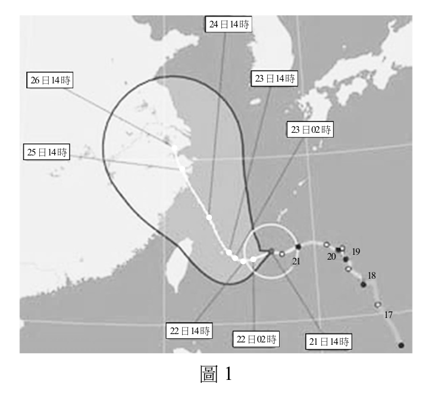
（A） 5（B） 10（C） 20（D） 30（E） 40答案：（B）
詳解與考點 正解：題幹要求用預測路徑估算平均時速，方法是先以暴風半徑換算位移，再除以時間。白色圓圈半徑為 180 公里，所以直徑=2×180=360 公里；由圖比較，21 日 14 時至 22 日 02 時的直線距離約為圓圈直徑的 1/3，因此位移量值約=360×1/3=120 公里。時間從 21 日 14 時到 22 日 02 時為 10+2=12 小時。平均時速量值=120÷12=10 公里／小時，B 為正解。
A：若選 5，12 小時的位移會是 5×12=60 公里，僅約圓圈直徑的 1/6，低估圖上的兩點距離，A 錯誤。
C：若選 20，12 小時的位移會是 20×12=240 公里，約為圓圈直徑的 2/3，高估圖上的距離；也可能是把 12 小時誤算為 6 小時，C 錯誤。
D：若選 30，12 小時的位移會是 30×12=360 公里，等於整個圓圈直徑，與圖示不符，D 錯誤。
E：若選 40，12 小時的位移會是 40×12=480 公里，超過圓圈直徑，明顯高估，E 錯誤。
本題考點：平均速率——平均時速=位移量值÷時間；圖像比例尺——先由半徑求直徑作比例尺，再以圖上長度換算實際距離；跨日時間——14 時至隔日 02 時應算 10+2=12 小時。
第 2 題 （多選）
已知此颱風在 22 日 02 時至 23 日 14 時之間，以等速率移動，但方向持續改變，之後朝北北西的方向維持直線前進，則下列敘述哪些正確？（應選 2 項）
（A） 22日02時至23日14時之間，颱風在路徑上各點位置所受合力為零（B） 22日02時至23日14時之間，颱風在路徑上各點位置所受合力方向與速度方向垂直（C） 23日14時之後，颱風恆以等速度前進（D） 23日14時之後，颱風在各點位置所受合力都為零（E） 24日14時至26日14時之間，颱風所受的平均合力方向與速度方向相反 r m答案：（B）（E）
詳解與考點 正解：題幹前段「等速率移動，但方向持續改變」表示速度向量的方向在變，後段「維持直線前進」則只保證方向固定；判斷合力須由加速度，也就是速度向量的改變來看。B：22 日 02 時至 23 日 14 時等速率轉向，合力指向轉彎內側，與瞬時速度方向垂直，B 正確。E：依題目所附圖 1 讀值，24 日 14 時、25 日 14 時、26 日 14 時皆在直線路段，且等時間點的間距逐漸縮小，表示颱風沿原方向減速；加速度與平均合力的方向皆和速度方向相反，E 正確。
A：方向持續改變代表速度向量改變，必有非零合力，不能說合力為零，A 錯誤。
C：23 日 14 時後維持直線只表示運動方向不變，速率仍可能改變，因此不一定是等速度前進，C 錯誤。
D：直線前進時若速率改變，仍有沿運動方向或反方向的合力；題幹未保證速率恆定，故不能判定各點合力都為零，D 錯誤。它看起來對，是因為直線運動常被誤等同於等速度運動；實際上只有速度量值與方向都不變時，合力才為零。
本題考點：牛頓運動定律——合力方向與加速度方向相同，合力為零的判準是速度向量不變；曲線運動判準——等速率轉向時合力垂直瞬時速度並指向內側；運動圖判讀——等時間內位移逐漸縮小表示減速，平均合力方向與速度方向相反。
第 3 題
已知地球（E）與火星（M）的平均半徑比值 \( \dfrac{r_{\mathrm{E}}}{r_{\mathrm{M}}} \) 約為 1.86，質量比值 \( \dfrac{m_{\mathrm{E}}}{m_{\mathrm{M}}} \) 約為 9.3，試問同一物體在火星表面所受重力約為在地球表面所受重力的多少倍？
（A） 0.10（B） 0.37（C） 0.72（D） 0.93（E） 1.86答案：（B）
詳解與考點 正解：本題比較同一物體在兩星表面的重力，應選表面重力公式 g=GM/r²；同一物體的重量比等於兩星 g 的比。火星對地球的比值＝(m_M/m_E)×(r_E/r_M)²＝(1/9.3)×1.86²＝(1/9.3)×3.4596=0.371，約為 0.37，所以在火星表面所受重力約為地球的 0.37 倍。B：0.37 正確，故 B 為正解。
A：0.10 約等於 1/9.3，只用了質量比，漏掉半徑平方的修正。完整計算還要乘 1.86²＝3.4596，故 A 錯誤。它看起來對，是因為火星質量約為地球的 1/9.3，但表面重力還受半徑平方影響。
C：0.72 約為 (1/9.3)×1.86，僅把半徑比取一次方；公式要求 r_E/r_M 的平方，故 C 錯誤。
D：0.93 未依 m_M/m_E=1/9.3 與半徑平方項計算，與 0.371 不符，D 錯誤。
E：1.86 只取了半徑比，且重力與半徑應成反比平方，故 E 錯誤。
本題考點：表面重力——g=GM/r²；比值計算——同一物體在兩星表面的重量比為質量比乘半徑反比的平方，先統一成「火星／地球」再代入。
第 4 題 （多選）
自然界的基本交互作用中，哪幾種對日常天氣現象的影響最為明顯常見？（應選 2 項）
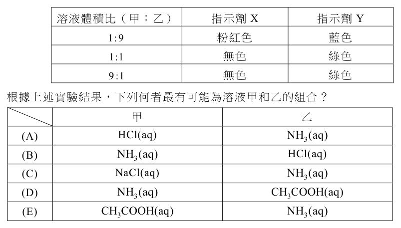
（A） 弱作用（弱核力）（B） 強作用（強核力）（C） 夸克作用（D） 電磁力作用（E） 重力作用答案：（D）（E）
詳解與考點 正解：題幹問日常天氣中最明顯常見的基本交互作用。D：大氣分子間的化學鍵、雲層帶電與閃電放電皆屬電磁力作用，故 D 正確。E：重力影響空氣對流、水氣上升凝結與降水落下，是天氣的重要作用力，故 E 正確。
A、B：弱核力與強核力的作用範圍在原子核尺度，分別涉及放射衰變或核子、夸克間的作用，不直接主導日常天氣，A、B 錯誤。
C：「夸克作用」不是獨立的基本交互作用，夸克間交互作用歸於強作用，C 錯誤。
本題考點：基本交互作用——日常天氣主要受電磁力與重力影響；尺度判準——強作用、弱作用主要在原子核尺度顯著，不能用以解釋一般雲、雨與閃電現象。
第 5 題
若質量為 720 公斤的球體，具有 3600 千焦耳的動能，則此球體的速率約為多少公尺／秒？
（A） \(10^2\)（B） \(10^3\)（C） \(10^4\)（D） \(10^5\)（E） \(10^6\)答案：（A）
詳解與考點 正解：題幹給動能與質量，應用 KE=1/2mv² 反解速率，並先將 kJ 換成 J。KE=3600×10³ J=3.6×10⁶ J。由 v=√(2KE/m)，代入 v=√(2×3.6×10⁶/720)=√(7.2×10⁶/720)=√(10⁴)=10²=100 公尺／秒，故 A 為正解。
B：10³ 公尺／秒通常是忘記最後要開根號，或把 kJ 的換算量級處理錯誤，B 錯誤。
C：10⁴ 公尺／秒比正確值大 100 倍，未正確除以質量或開根號，C 錯誤。
D：10⁵ 公尺／秒量級過大，D 錯誤。
E：10⁶ 公尺／秒量級過大，E 錯誤。
本題考點：動能公式——KE=1/2mv²，求速率時用 v=√(2KE/m)；單位與量級——先將 3600 kJ 化為 3.6×10⁶ J，再完成除法後開平方根。
第 6 題 （多選）
常用的晶片卡中有內建線圈，如示意圖 2 的下半部所示，向左箭號代表應電流 \(I_2 > 0\) 的流向。圖 2 的上半部為讀卡機線圈，向右箭號代表電流 \(I_1 > 0\) 時的流向。當 \(I_1 > 0\) 時線圈產生的磁場，如虛線所示。晶片卡線圈貼近讀卡機線圈時，電流 \(I_1\) 產生的磁場會造成應電流 \(I_2\) 的變動，驅動晶片發出訊息。當兩線圈均為靜止且 \(I_2 = 0\) 時，欲使晶片卡線圈產生圖示 \(I_2 > 0\) 流向的應電流，則讀卡機線圈的電流 \(I_1\) 應如何？（應選 2 項）
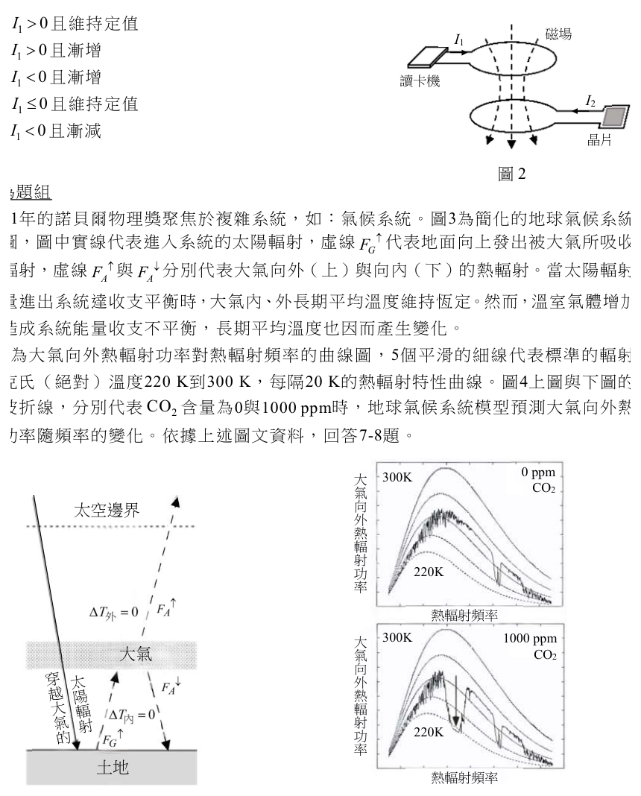
（A） \(I_1 > 0\) 且維持定值（B） \(I_1 > 0\) 且漸增（C） \(I_1 < 0\) 且漸增（D） \(I_1 \le 0\) 且維持定值（E） \(I_1 < 0\) 且漸減答案：（B）（E）
詳解與考點 正解：本題要用冷次定律判斷感應電流方向，關鍵是感應電流必反抗「磁通量的變化」，因此先排除磁場不變的情況。B：I1>0 且漸增時，讀卡機線圈所產生、穿過晶片卡的磁通量增加；晶片卡以圖示 I2>0 的方向產生磁場反抗此增加，故 B 正確。E：I1<0 且漸減時，負方向電流的量值變小，原有反向磁通量減少；晶片卡以圖示 I2>0 的方向反抗此減少，故 E 正確。
A：I1>0 且維持定值時，磁場與磁通量均不變，無感應電流，A 錯誤。
C：I1<0 且漸增時，反向磁通量的量值增加，依冷次定律所生感應電流方向與圖示 I2>0 不符，C 錯誤。
D：I1≤0 且維持定值時，磁通量不變，無法產生感應電流，D 錯誤。
本題考點：電磁感應——感應電流出現的必要條件是磁通量改變，穩定磁場不感應；冷次定律判準——先判原磁場方向及其增減，再選能產生反抗該變化之磁場方向的電流。
2021年的諾貝爾物理獎聚焦於複雜系統，如：氣候系統。圖3為簡化的地球氣候系統模型圖，圖中實線代表進入系統的太陽輻射，虛線F ↑代表地面向上發出被大氣所吸收的 G 熱輻射，虛線F ↑與 F ↓分別代表大氣向外（上）與向內（下）的熱輻射。當太陽輻射的 A A 能量進出系統達收支平衡時，大氣內、外長期平均溫度維持恆定。然而，溫室氣體增加，會造成系統能量收支不平衡，長期平均溫度也因而產生變化。圖4為大氣向外熱輻射功率對熱輻射頻率的曲線圖，5個平滑的細線代表標準的輻射體由克氏（絕對）溫度220 K到300 K，每隔20 K的熱輻射特性曲線。圖4上圖與下圖的黑色波折線，分別代表CO 含量為0與1000 ppm時，地球氣候系統模型預測大氣向外熱輻 2 射功率隨頻率的變化。依據上述圖文資料，回答7-8題。 0 ppm 大 300K CO2 氣太空邊界向外熱輻射 220K 功率熱輻射頻率 300K 1000 ppm 大大氣氣 CO2 向外熱輻射功 220K 率土地熱輻射頻率圖3 圖4
第 7 題
圖4所預測之地球大氣向外熱輻射，最接近攝氏多少度的標準的輻射體，所發出之熱輻射？
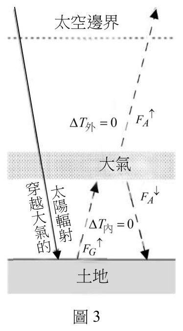
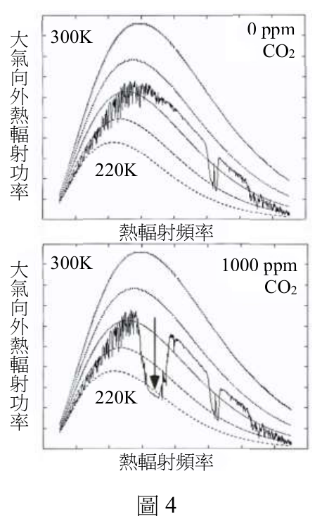
（A） 270（B） 260（C） 100（D） -10（E） -100答案：（D）
詳解與考點 正解：題目要求由圖 4 的標準輻射體曲線判讀溫度，再由克氏溫度換算攝氏溫度；選用此方法，是因圖中的曲線標示克氏溫度，而選項使用攝氏溫度。大氣向外熱輻射的波折線整體最接近 260 K 的標準曲線。攝氏溫度＝克氏溫度−273=260−273＝−13℃，最接近 D 的 −10℃，故 D 為正解。
A：270℃換成克氏溫度為 270+273=543 K，遠高於圖示約 260 K，A 錯誤。
B：260℃換成克氏溫度為 260+273=533 K；圖上的 260 K 不能直接當成 260℃，B 錯誤。
C：100℃＝100+273=373 K，仍高於圖示約 260 K，C 錯誤。
E：−100℃＝−100+273=173 K，低於圖示約 260 K；若將 260−273 的結果誤估過低，才可能選 E，E 錯誤。
本題考點：黑體輻射曲線判讀——先找與觀測波折線最接近的標準溫度曲線；溫標換算判準——攝氏溫度＝克氏溫度−273，260 K−273≈−13℃，再選最接近的 −10℃。
第 8 題 （多選）
若\(\Delta T_{內}\)與\(\Delta T_{外}\)分別代表因為溫室氣體\(CO_{2}\)增加導致大氣內與外之長期平均溫度的變化。依據圖3與圖4的模型預測，當大氣中的\(CO_{2}\)含量增加時，\(\Delta T_{內}\)與\(\Delta T_{外}\)的關係式，哪些正確？（應選2項）
（A） \(\Delta T_{內}<0\)（B） \(\Delta T_{內}>0\)（C） \(\Delta T_{內}=\Delta T_{外}=0\)（D） \(\Delta T_{外}>0\)（E） \(\Delta T_{外}<0\)答案：（B）（E）
詳解與考點 正解：官方答案為 BE；溫室氣體 CO₂ 增加後，大氣吸收地面熱輻射及向內回輻射的作用增強，使大氣內長期平均溫度上升，所以 B 的 ΔT內>0 正確。官方原卷的 E 為 ΔT外<0：CO₂ 增加使大氣向外輻射中部分頻率的輻射功率降低，對應大氣外長期平均溫度下降，故官方答案列 E。惟本筆輸入把 D、E 的文字對調，將 E 寫成 ΔT外>0，與官方答案鍵 BE 不相容。
A：ΔT內<0 與溫室氣體增加造成大氣內增暖的模型預測相反。
C：CO₂ 增加會改變能量收支與長期平均溫度，不能判為 ΔT內=ΔT外=0。
D：本筆輸入的 D 為 ΔT外<0，內容符合模型預測；但官方原卷中這段文字位於 E，顯示本筆 D、E 選項擷取時發生鍵位對調，不能據此把官方答案改成 BD。
本題考點：溫室效應模型——CO₂ 增加時，大氣內長期平均溫度上升、大氣外長期平均溫度下降；鍵位核對判準——官方原卷為 B 的 ΔT內>0 與 E 的 ΔT外<0，本筆輸入則誤將 D、E 文字對調。
第 9 題
下列關於科學史實敘述，何者正確？
（A） 馬克士威以馬克士威方程式解釋光電效應（B） 愛因斯坦以光子模型解釋光電效應（C） 拉塞福利用電子撞擊氫原子探究原子結構（D） 波耳首先觀測到氫原子光譜（E） 波耳氫原子模型的建構比拉塞福的原子模型來得早電荷答案：（B）
詳解與考點 正解：題幹問近代物理科學史，關鍵是光電效應必須以光量子解釋其頻率閾值現象。B：愛因斯坦於1905年提出光量子（光子）模型，以光子能量 E=hf 解釋光電效應，並因此獲1921年諾貝爾物理獎，故 B 為正解。
A：馬克士威方程式描述電磁波，無法解釋光電效應的量子特性，A 錯誤。
C：拉塞福以 α 粒子撞擊金箔探究原子結構，不是以電子撞擊氫原子，C 錯誤。
D：氫原子光譜早由巴耳末等人分析，波耳並非首先觀測者，D 錯誤。
E：拉塞福有核模型在1911年提出，波耳氫原子模型在1913年提出，波耳較晚，E 錯誤。
本題考點：近代物理科學史——光電效應以愛因斯坦的光子模型解釋，E=hf；拉塞福先提出有核模型，波耳後建立氫原子模型；辨析史實時要核對人物、實驗材料與年代先後。
第 10 題
下列離子之荷質比，即比值的關係，何者正確？（原子量 H＝1.0、He＝4.0、Li＝6.9）質量
（A） H+ >He2+ >Li+（B） He2+ >Li+ >H+（C） Li+ >He2+ >H+（D） He2+ >Li+ =H+（E） Li+ =H+ >He2+答案：（A）
詳解與考點 正解：荷質比要同時計入電荷量與質量，採用 q/m 逐一計算即可比較。A：H⁺ 的 q/m=1e/1.0u=1.00e/u；He²⁺ 的 q/m=2e/4.0u=0.50e/u；Li⁺ 的 q/m=1e/6.9u≈0.145e/u。由大至小為 H⁺＞He²⁺＞Li⁺，與 A 相符，故 A 為正解。
B：此選項把 He²⁺ 排在 H⁺ 前；雖然 He²⁺ 帶 2 個電荷，但其質量是 4.0u，2/4.0=0.50 小於 H⁺ 的 1/1.0=1.00，B 錯誤。它看起來對，是因為只注意到 He²⁺ 的電荷較大，忽略了質量也較大。
C：Li⁺ 的 q/m=1/6.9≈0.145，是三者最小，不可能最大，C 錯誤。
D：Li⁺ 的 0.145 不等於 H⁺ 的 1.00，且小於 He²⁺ 的 0.50，D 錯誤。
E：Li⁺ 的 0.145 不等於 H⁺ 的 1.00，也不大於 He²⁺ 的 0.50，E 錯誤。
本題考點：荷質比計算——荷質比=q/m，先以電荷量除以質量再比較；離子比較判準——不能只比電荷數或質量，必須把兩者同時代入 q/m。
第 11 題
小婷將混合染料以濾紙層析法分析，在展開液上升至停止線時終止層析。待濾紙乾燥後，觀察發現甲、乙、丙三種成分之相對位置如圖 5；並定義 Rf 值如下：\( \text{Rf值} = \dfrac{\text{成分由起始線的移動距離}}{\text{同時間展開液由起始線至停止線的移動距離}} \) Rf 值與該成分及展開液的特性有關，可做鑑定之用。下列敘述何者正確？
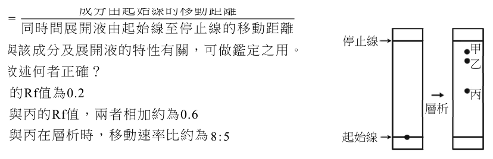
（A） 乙的 Rf 值為 0.2（B） 甲與丙的 Rf 值，兩者相加約為 0.6（C） 乙與丙在層析時，移動速率比約為 8:5（D） 甲、乙、丙的分子量大小關係為甲＜乙＜丙（E） 甲、乙、丙的 Rf 值，會隨著展開液移動距離的增加而變大答案：（C）
詳解與考點 正解：Rf＝成分由起始線的移動距離÷展開液由起始線至停止線的移動距離；同一次層析的時間相同，移動距離比就是移動速率比。由圖 5 判讀乙、丙自起始線的移動距離比約為 8:5，所以乙與丙的移動速率比約為 8:5，故 C 為正解。
A：由圖 5 量得乙的移動距離與展開液距離之比不等於 0.2，A 錯誤。
B：由圖 5 判讀甲與丙的 Rf 值相加不約為 0.6，B 錯誤。
D：濾紙層析的移動距離受成分與展開液的作用影響，不能只據 Rf 值直接推出分子量關係為甲＜乙＜丙，D 錯誤。它看起來對，是因為分子量可能影響部分分離現象，但不是本法可單獨判讀的固定規則。
E：在同一成分、同一展開液與相同層析條件下，分子與展開液的移動距離同步增加，Rf 是兩距離的比值，維持定值，不會隨展開液移動距離增加而變大，E 錯誤。
本題考點：濾紙層析 Rf 值——Rf＝成分移動距離÷展開液移動距離；同時展開的速率比較——時間相同時以移動距離比代替速率比；判準是 Rf 反映成分與展開液的特性，不能直接等同分子量。
第 12 題 （多選）
在低溫高壓的狀態下，甲烷的氣體分子被水分子包覆，形成類似冰晶的化合物，稱為甲烷水合物。圖 6 是甲烷水合物的相圖，依此，下列敘述哪些正確？（應選 2 項）冰與水的相界 20 40 壓力 60 （atm） 80 甲烷水合物與 100 甲烷的相界 120 140 -30 -15 0 15 30 溫度（℃）圖6
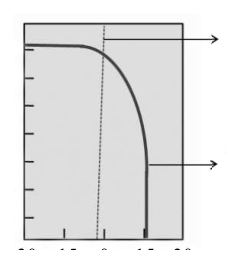
（A） 甲烷水合物點燃時，發生燃燒反應的應為甲烷氣體（B） 甲烷氣體與水不會同時存在（C） 在0℃、140大氣壓時，甲烷水合物與冰同時存在（D） 在-15℃時，不會有甲烷水合物的存在（E） 在0℃、10大氣壓時，不會有甲烷水合物的存在答案：（A）（E）
詳解與考點 正解：本題要以燃燒物質的本質及相圖中的溫度、壓力位置判讀甲烷水合物是否穩定存在。A：甲烷水合物受熱會釋出甲烷氣體，實際燃燒的是甲烷氣體 CH4；水本身不燃，故 A 正確。E：由圖 6 可知，0℃ 時甲烷水合物需在高壓區才穩定。0℃、10 atm 的壓力遠低於該溫度的水合物相界壓力，位置落在甲烷與水的區域，因此不會有甲烷水合物，故 E 正確。
B：相圖的相界表示相鄰兩相可在平衡下同時存在；甲烷氣體與水並非不會同時存在，B 錯誤。
C：0℃、140 atm 位於甲烷水合物的穩定區，不在冰與水的相界上，因此不是甲烷水合物與冰同時存在，C 錯誤。它看起來對，是因為 140 atm 壓力很高，容易只看「高壓」便誤判為兩相共存；相圖必須同時核對溫度與是否落在相界線上。
D：-15℃ 並不排除甲烷水合物；在足夠高壓下，該溫度仍可落入甲烷水合物的穩定區，D 錯誤。
本題考點：相圖判讀——先以溫度、壓力定位，落在區域判單相、落在相界判兩相共存；燃燒本質——可燃的是釋出的甲烷 CH4，水合物中的水不參與燃燒。
第 13 題
已知指示劑 X 在 pH 值 7.5 以下和 8.0 以上分別是無色和粉紅色，而指示劑 Y 在 pH 值 4.0-7.5 與 8.0-10.0 時分別是綠色和藍色。若將濃度各 0.1 M 的溶液甲和乙分別以體積比 1:9、1:1 和 9:1 充分混合，再分別用指示劑 X 和 Y 測混合溶液，其結果如表 1 所示。根據上述實驗結果，下列何者最有可能為溶液甲和乙的組合？
表 1 溶液體積比（甲：乙） 指示劑 X 指示劑 Y 1:9 粉紅色 藍色 1:1 無色 綠色 9:1 無色 綠色
（A） 甲：HCl(aq)；乙：\(\mathrm{NH_3(aq)}\)（B） 甲：\(\mathrm{NH_3(aq)}\)；乙：HCl(aq)（C） 甲：NaCl(aq)；乙：\(\mathrm{NH_3(aq)}\)（D） 甲：\(\mathrm{NH_3(aq)}\)；乙：\(\mathrm{CH_3COOH(aq)}\)（E） 甲：\(\mathrm{CH_3COOH(aq)}\)；乙：\(\mathrm{NH_3(aq)}\)答案：（E）
詳解與考點 正解：表 1 的關鍵是三種體積比依序呈現「1:9 時 X 粉紅、Y 藍色；1:1 時 X 無色、Y 綠色；9:1 時 X 無色、Y 綠色」，須用甲、乙過量及等量時的酸鹼性共同判斷。E：甲為 CH3COOH(aq)、乙為 NH3(aq)；乙過量時混合液呈鹼性，符合 X 粉紅、Y 藍色，等量時生成 CH3COONH4，pH 接近中性，符合 X 無色、Y 綠色，甲過量時則呈酸性，符合 X 無色、Y 綠色，故 E 為正解。
A：甲為 HCl(aq)、乙為 NH3(aq) 時，1:1 混合後主要為約 0.05 M 的 NH4+，pH 約 5.1，確實可使 Y 呈綠色；但在 9:1 時 HCl 大量過量，剩餘 HCl 約 0.08 M，pH 約 1.1，不落在 Y 的綠色範圍 4.0–7.5，因此 A 錯誤。
B：甲為 NH3(aq)、乙為 HCl(aq) 時，1:9 為強酸 HCl 過量，混合液應呈強酸性，不會同時符合 X 粉紅、Y 藍色的鹼性結果，B 錯誤。
C：甲為 NaCl(aq)、乙為 NH3(aq) 時，9:1 仍含 NH3，混合液應偏鹼，不能符合表中 X 無色、Y 綠色的酸性至近中性結果，C 錯誤。
D：甲為 NH3(aq)、乙為 CH3COOH(aq) 時，1:9 為 CH3COOH 過量，應偏酸，與表中 X 粉紅、Y 藍色的鹼性結果相反，D 錯誤。
本題考點：酸鹼混合與指示劑——先由 X、Y 顏色反推 pH 區間，再逐一檢查甲過量、等量、乙過量三種情況；強酸弱鹼判準——HCl 與 NH3 等量混合會生成 NH4+ 而呈酸性，仍可能落在 Y 的綠色範圍，不能只憑 1:1 的顏色排除。
第 14 題
汽油是含有 5 至 12 個碳原子的碳氫化合物，燃燒時會排放 \(\mathrm{CO_2}\)，是造成空氣中 \(\mathrm{CO_2}\) 增加的原因之一。假如以辛烷（\(\mathrm{C_8H_{18}}\)）代表汽油的成分，而且辛烷在引擎運轉時，可完全燃燒，其反應式如下：\(\mathrm{C_8H_{18}(l) + O_2(g) \rightarrow CO_2(g) + H_2O(l)}\)（係數尚未平衡）若一公畝的森林平均每天可吸收 16 公斤的 \(\mathrm{CO_2}\)，當汽車油箱中 50 公升的辛烷完全燃燒，則所產生的 \(\mathrm{CO_2}\) 約為一公畝森林多少天的吸收量？（\(\mathrm{C_8H_{18}}\)：密度 ＝ 0.70 \(\mathrm{g/cm^3}\)、分子量 ＝ 114）
（A） 0.84（B） 2.2（C） 6.8（D） 14（E） 54答案：（C）
詳解與考點 正解：本題要把 50 L 辛烷燃燒後的 CO2 質量換算成森林的日吸收量，關鍵方法是依燃燒反應的碳原子數求莫耳比，再依序做密度、莫耳數與質量換算。C：辛烷體積 50 L=50000 cm³，質量＝50000×0.70=35000 g；辛烷莫耳數＝35000÷114≈307 mol。每 1 mol C8H18 完全燃燒生成 8 mol CO2，故 CO2 莫耳數＝307×8≈2456 mol，CO2 質量＝2456×44≈1.08×10⁵ g≈108 kg。森林每天吸收 16 kg CO2，所需天數＝108÷16≈6.8 天，故 C 為正解。
A、B：0.84 天或 2.2 天均明顯偏小，常見原因是漏乘每 1 mol 辛烷生成的 8 mol CO2，或未以密度把體積換成質量，A、B 錯誤。
D、E：14 天或 54 天均明顯偏大，依正確換算 CO2 僅約 108 kg；多半是 CO2 莫耳質量或 L 與 cm³ 的換算出錯，D、E 錯誤。
本題考點：化學計量與單位換算——燃燒生成物先由平衡式的莫耳比判定，C8H18：CO2=1:8；質量換算操作——體積×密度→質量，質量÷分子量→莫耳數，莫耳數×莫耳質量→生成物質量，再除以每日吸收量求天數。
第 15 題
某離子化合物 X 之溶解度與溫度關係如圖 7。林生利用圖 8 裝置測試體積為 100 cm³ 金屬塊的浮力，且可忽略溫度對其影響。在 45℃ 已達溶解平衡的 X 水溶液中，尚有未溶解的 X 固體。將金屬塊完全沒入該溶液中，發現金屬塊重量減輕 120 克重，若 X 式量為 75，則此 X 飽和溶液的體積莫耳濃度（M）為何？
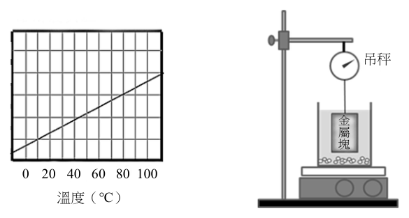
（A） 2.8（B） 3.4（C） 4.0（D） 4.6（E） 5.3答案：（D）
詳解與考點 正解：本題先用阿基米德原理由浮力求溶液密度，再用 45℃ 的飽和溶解度換算體積莫耳濃度。金屬塊體積為 100 cm³，完全沒入後重量減輕 120 克重，故排開溶液質量為 120 g。溶液密度＝120 g/100 cm³＝1.2 g/cm³。由圖 7，45℃ 飽和溶解度約為 41 g/100 g 水，即 100 g 水與 41 g 的 X 形成 141 g 飽和溶液。取 100 cm³ 溶液，其質量＝100×1.2=120 g；其中 X 的質量＝120×41/141≈34.9 g；X 的莫耳數＝34.9/75≈0.465 mol；100 cm³＝0.1 L；體積莫耳濃度＝0.465/0.1≈4.6 M。因此 D 正確，故 D 為正解。
A：2.8 M 顯著低於依浮力求得密度後的 4.6 M，未正確把 100 cm³ 溶液換算為 120 g 飽和溶液，A 錯誤。
B：3.4 M 仍低於 4.6 M，顯示飽和溶液中溶質質量的換算不足，B 錯誤。
C：4.0 M 與正確值不符，常見原因是以 100 g 水為分母直接換算，忽略溶解度 41 g/100 g 水對應的是 141 g 溶液，C 錯誤。它看起來對，是因為 41 g 這個數值容易被誤當成每 100 g 溶液的溶質量。
E：5.3 M 高於正確值，常見原因是將溶液體積或溶質質量的換算重複放大，E 錯誤。
本題考點：阿基米德原理——物體完全沒入時，浮力等於排開液體的重量，120 g/100 cm³＝1.2 g/cm³；溶解度換算——41 g/100 g 水表示 141 g 飽和溶液含 41 g 溶質；體積莫耳濃度——先求溶質莫耳數，再除以溶液體積（L）。
第 16 題
圖 9 是殺蟲劑芬普尼的結構；據此，一個芬普尼分子所含的所有氮原子共有幾對孤對電子？
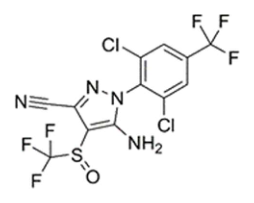
（A） 2（B） 4（C） 6（D） 8（E） 10答案：（B）
詳解與考點 正解：題幹只問芬普尼分子「所有氮原子」的孤對電子數，應逐一依鍵結數計算。結構中有 4 個 N：吡唑環上 2 個環內 N，其中一個接苯環、另一個為雙鍵 N，各有 1 對孤對電子；─NH2 的 N 與 2 個 H、1 個環碳形成 3 根鍵，有 1 對孤對電子；腈基 ─C≡N 的 N 以三鍵接碳，仍有 1 對孤對電子。合計 1+1+1+1=4 對，B 正確，故 B 為正解。
A：2 對少算了 2 個含氮位置；4 個 N 各有 1 對孤對電子，不能只計部分環內 N，A 錯誤。
C、D、E：6、8、10 對都把每個 N 的孤對電子數高估。每個本題中的 N 都只保有 1 對孤對電子，總數不會超過 4 對，故均錯誤。它們看起來對，是因為容易把 N 的全部價電子，或其他原子的孤對電子一併計入；題目只問氮原子未共用的電子對。
本題考點：路易斯結構與孤對電子——先圈出題目指定元素，再依各原子的鍵結數判定未共用電子對；腈基 N 判準——N 與 C 形成三鍵後仍保有 1 對孤對電子，不可漏算。
第 17 題 （多選）
圖 10 是某些元素（以代號 a～h 表示）其原子的質量數與質子數關係圖。根據此圖，下列敘述哪些正確？（應選 2 項）
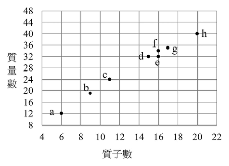
（A） a 的原子半徑比 b 的原子半徑大（B） d 與 e 為同位素（C） c 的氧化物水溶液之鹼性比 d 的氧化物水溶液弱（D） h 的價電子數比 f 多（E） f 的中子數比 e 多答案：（A）（E）
詳解與考點 正解：題圖座標給質子數 Z 與質量數 A，先辨識元素與中子數 A-Z。A：a 的 Z=6，為 C；b 的 Z=9，為 F。兩者同在第二週期，原子半徑由左向右遞減，所以 C 的半徑大於 F，A 正確。E：f 的中子數=35-15=20；e 的中子數=32-16=16；20>16，所以 f 比 e 多 4 個中子，E 正確。
B：d 的 Z=15、e 的 Z=16；同位素必須質子數相同，兩者 Z 不同，B 錯誤。
C：c 為 Na，d 為 P。Na 氧化物水溶液呈強鹼性，P 氧化物水溶液呈酸性，因此 c 的鹼性較強而非較弱，C 錯誤。
D：h 的 Z=20，為 Ca，價電子數為 2；f 的 Z=15，為 P，價電子數為 5；2<5，所以 h 比 f 少，D 錯誤。
本題考點：原子組成——中子數=質量數-質子數；同位素判準——質子數相同、質量數不同；週期表趨勢——同週期由左向右原子半徑遞減，主族元素價電子數可由族別判定。
第 18 題 （多選）
2021 年諾貝爾化學獎頒給研究催化劑的學者。人體中的酵素（或稱酶），即是生化反應的催化劑，如胃液中的胃蛋白酶可將蛋白質分解為小的分子片段。酵素的催化能力受環境的溫度、酸鹼性、受質濃度和專一性等影響。下列敘述哪些正確？（應選 2 項）
（A） 酵素通常是胺基酸的聚合物（B） 胃蛋白酶在pH＝7.4的環境有最佳活性（C） 溫度越高時，胃蛋白酶的催化能力越強（D） 食用大量制酸劑會降低胃蛋白酶的催化能力（E） 胃蛋白酶亦可將澱粉分解產生葡萄糖答案：（A）（D）
詳解與考點 正解：題幹以胃蛋白酶為例，判斷關鍵是酵素通常為蛋白質、具有最適 pH 與專一性。A：酵素本質通常是蛋白質，蛋白質是胺基酸的聚合物；雖有少數核酶，仍可說酵素通常由胺基酸聚合而成，故 A 正確。D：胃蛋白酶最適 pH 約為 2；大量制酸劑如碳酸鈣、氫氧化鎂會提高胃內 pH，使環境偏離最適 pH，顯著降低催化能力，故 D 正確。
B：pH=7.4 屬接近中性的環境，遠離胃蛋白酶最適 pH 約 2，活性極低而非最佳，B 錯誤。
C：溫度升高到最適範圍前，酵素活性可能上升；溫度過高會破壞蛋白質結構使酵素變性，活性反而下降，C 錯誤。它看起來對，是因為升溫會增加分子碰撞，但忽略酵素有最適溫度且高溫會變性。
E：胃蛋白酶專一性地催化蛋白質水解，不能將澱粉分解成葡萄糖；澱粉須由澱粉酶分解，E 錯誤。
本題考點：酵素本質——酵素通常是胺基酸組成的蛋白質；酵素活性條件——pH 與溫度偏離最適值會使活性下降，高溫可致變性；酵素專一性——依受質種類判斷可催化的反應。
第 19 題
依據上文，下列對於細胞有絲分裂的敘述，何者正確？
（A） 細胞分裂過程中，細胞因具單套染色體，螢光強度最弱（B） 細胞分裂完成時，細胞具雙套染色體，螢光強度較間期時弱（C） 細胞完成DNA複製時，細胞具三套染色體，螢光強度最強（D） 細胞DNA複製時，是處於細胞分裂期（E） 細胞完成DNA複製後進入間期，此時螢光強度最強答案：（B）
詳解與考點 正解：螢光強度與 DNA 含量成正比；有絲分裂完成後，每個子細胞回復雙套染色體，DNA 含量為 2N，較 DNA 已複製完成的 G2 期 4N 低。B 所述符合此變化，故 B 為正解。
A：有絲分裂不會使細胞成為單套染色體；子細胞仍為雙套，錯誤。
C：DNA 複製完成後 DNA 含量為 4N，不是三套染色體，錯誤。
D：DNA 複製在間期的 S 期進行，不在分裂期，錯誤。
E：DNA 複製完成後進入的是 G2 期，而 G2 期本來就屬間期；選項把「進入間期」的階段關係說反，錯誤。
本題考點：細胞週期——DNA 在間期 S 期複製，G2 期與分裂前 DNA 含量為 4N；螢光判讀——螢光強度與 DNA 含量成正比，分裂完成的子細胞回到 2N。
第 20 題 （多選）
取下列哪些部位的細胞進行 DNA 含量分析，較可能得到細胞分裂進行中的結果？（應選 2 項）
（A） 植物木質部（B） 植物根尖（C） 受傷後修復中的皮膚（D） 成熟生殖細胞（E） 成熟神經細胞答案：（B）（C）
詳解與考點 正解：題幹要找較可能觀察到細胞分裂進行中的部位，應選細胞增生旺盛的組織。B：植物根尖分生區細胞持續進行有絲分裂，可觀察到不同細胞週期與分裂期的 DNA 含量。C：受傷後修復中的皮膚需要大量細胞分裂增生來填補傷口，較可能得到分裂進行中的結果。
A：植物木質部的導管、管胞多已分化成熟，且常為死細胞，不再進行分裂。
D：成熟生殖細胞如精子、卵已完成減數分裂，不再進行有絲分裂。
E：成熟神經細胞高度分化，幾乎不進行細胞分裂。
本題考點：細胞分裂位置——生長區與修復區細胞增生旺盛，最容易觀察到分裂中的細胞；DNA 含量分析——螢光強度與 DNA 含量成正比，可用以辨識細胞週期狀態。
第 21 題 （多選）
有關真核生物的光合作用和呼吸作用，下列哪些正確？（應選 3 項）
（A） 光合作用在葉綠體中進行（B） 發酵作用在粒線體中進行（C） 光合作用的過程中會產生ATP（D） 有氧呼吸產生ATP的過程在細胞質中進行（E） 有些植物細胞內可同時進行光合作用和有氧呼吸答案：（A）（C）（E）
詳解與考點 正解：題幹問真核生物光合作用與呼吸作用的場所及 ATP 產生，須分辨各作用的細胞內位置。A：光合作用在葉綠體中進行，包括基質與類囊體薄膜，正確。C：光反應在類囊體薄膜上產生 ATP，卡爾文循環再消耗 ATP，整體光合作用過程確有 ATP 合成，正確。E：含葉綠體的植物細胞，例如葉肉細胞，在光照下可同時於葉綠體行光合作用、於粒線體行有氧呼吸，正確。
B：發酵作用屬無氧呼吸，在細胞質基質中進行，不在粒線體中，錯誤。
D：有氧呼吸產生 ATP 的步驟分布於細胞質基質的糖解作用及粒線體內的克氏循環、氧化磷酸化，不能說全在細胞質中進行，錯誤。它看起來對，是因為糖解作用確實在細胞質中產生少量 ATP，卻忽略粒線體的主要產 ATP 階段。
本題考點：光合作用場所——葉綠體的類囊體薄膜進行光反應並合成 ATP，基質進行卡爾文循環；呼吸作用場所判準——發酵在細胞質基質，有氧呼吸的 ATP 來源須同時看細胞質與粒線體；細胞代謝可並行——具葉綠體的植物細胞在光照下可同時光合作用與有氧呼吸。
第 22 題 （多選）
從孟德爾的遺傳實驗中，延續到目前的遺傳學，有關基因的概念及其物質基礎的敘述，下列哪些正確？（應選 2 項）
（A） 描述豌豆遺傳所說的一對遺傳因子等同現代遺傳學的兩個基因型之概念（B） 用遺傳因子描述豌豆的遺傳現象時，遺傳因子假說是一種具符號的抽象概念（C） 分子生物學的中心法則說明了孟德爾實驗中性狀和遺傳因子之間的關連性（D） 位於同一條染色體上的基因，還是有很高的機會遵循孟德爾的獨立分配律（E） 孟德爾的第一及第二遺傳法則適用於含DNA之生物，也適用於病毒答案：（B）（C）
詳解與考點 正解：題幹比較孟德爾以遺傳因子解釋性狀與現代分子遺傳學的關係；須區分抽象模型、基因表現與獨立分配的適用條件。B：孟德爾用「遺傳因子」說明豌豆遺傳現象，當時是以符號進行推演的抽象概念，非已知的具體物質實體，正確。C：中心法則 DNA→RNA→蛋白質說明基因如何影響性狀，因而可連結孟德爾所稱遺傳因子與表現型，正確。
A：一對遺傳因子對應的是同一性狀的一對等位基因，不是兩個「基因型」的概念。
D：同一條染色體上的基因可能連鎖，是否近似獨立遺傳取決於基因距離與重組率；相距很遠時，重組率可接近 50%，但不能僅憑「位於同一條染色體」便主張有很高機會遵循獨立分配律。
E：孟德爾第一、第二法則以有性生殖與減數分裂的染色體分離為基礎；病毒無此細胞與染色體分離機制，不適用。
本題考點：孟德爾遺傳概念——遺傳因子是描述遺傳規律的抽象模型，現代可對應等位基因；中心法則——DNA→RNA→蛋白質連結基因與性狀；獨立分配判準——同染色體基因能否近似獨立遺傳，須依基因距離與重組率判斷。
第 23 題 （多選）
小芳在實驗室學習基因轉殖的技術，他將生長激素基因（GH）殖入大西洋鮭之受精卵後，與控制組分別在試驗場之養殖池養成。另外，亦將轉殖組和控制組之魚分別飼養在由附近河流取水的養殖池中，以比較使用不同水質養殖的差別。三年後得成魚之體長如表 2。根據表 2，下列敘述哪些正確？（應選 2 項）
表 2 試驗場池水 河水 控制組 82 cm 53 cm GH 轉殖組 166 cm 152 cm
（A） 控制組的魚，其體內並未有生長激素的分泌（B） GH 轉殖組的魚，其肌肉之密度較控制組的魚為低（C） 在河水中，可能較缺乏大西洋鮭生長所需的物質（D） 在河水中，GH 轉殖的大西洋鮭仍然會分泌高量生長激素（E） GH 轉殖的大西洋鮭，在河水中分泌生長激素的量高於在試驗場池水中答案：（C）（D）
詳解與考點 正解：題幹表 2 的關鍵比較是同一組別在不同水質下的體長，以及轉殖組與控制組在同一水質下的差距。C：控制組在試驗場池水為 82 cm、河水僅 53 cm；轉殖組亦是池水 166 cm 大於河水 152 cm，兩組在河水中都較小，合理推論河水可能較缺乏大西洋鮭生長所需的物質，正確。D：GH 轉殖組在河水中仍達 152 cm，遠大於控制組的 53 cm，顯示轉殖基因在河水中仍持續表現並分泌高量生長激素，正確。
A：控制組仍能正常生長，體內本來就會分泌生長激素，只是未額外殖入 GH，A 錯誤。
B：表中只提供體長，未提供肌肉密度資料，無從推論 GH 轉殖組肌肉密度較低，B 錯誤。
E：轉殖組在河水中為 152 cm，略低於試驗場池水中的 166 cm；表中沒有分泌量數據，且體長表現也不支持河水中分泌量較高，E 錯誤。它看起來對，是因為轉殖組在河水中仍明顯較高大，卻不能把「仍有效表現」誤推為「分泌量高於另一水質」。
本題考點：實驗資料判讀——比較環境因素時固定組別，比較轉殖效果時固定水質；證據範圍判準——表中只有體長即可推論生長表現，不能直接推論未測量的肌肉密度或精確激素分泌量。
注射疫苗可透過免疫的過程達到防疫的目的，新冠肺炎（Coronavirus Disease 2019, COVID-19）之RNA疫苗即為對抗嚴重急性呼吸道症候群冠狀病毒2型（SARS-CoV-2）的疫苗之一。
第 24 題 （多選）
有關 RNA 的敘述，下列哪些正確？（應選 2 項）
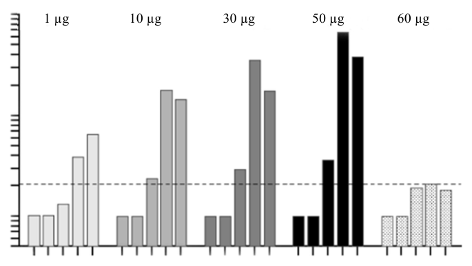
（A） RNA分子為短片段的雙股螺旋結構（B） 構成RNA分子的四種基本鹼基與構成DNA的一樣（C） 細胞的基因被表現時，RNA經由轉錄產生（D） COVID-19疫苗的RNA轉譯後會產生蛋白質（E） 注射RNA疫苗後，其中的RNA必先插入基因體中才能產生蛋白質答案：（C）（D）
詳解與考點 正解：題幹問 RNA 的結構、基因表現與 RNA 疫苗機制，判斷關鍵在區分轉錄、轉譯與基因體整合。C：細胞表現基因時，會先以 DNA 為模板進行轉錄，產生 RNA，正確。D：COVID-19 的 RNA 疫苗將編碼棘蛋白的 mRNA 送入細胞，核糖體再將 mRNA 轉譯成棘蛋白，引發免疫反應，正確。因此正解為 C、D。
A：RNA 通常為單股，雖可形成局部莖環等二級結構，並非短片段的雙股螺旋結構，A 錯誤。
B：RNA 的四種鹼基為腺嘌呤 A、鳥嘌呤 G、胞嘧啶 C、尿嘧啶 U；DNA 則含胸腺嘧啶 T 而非 U，兩者不完全相同，B 錯誤。
E：mRNA 疫苗的 RNA 可直接在細胞質由核糖體轉譯，不必先插入基因體，也不會因此整合至 DNA，E 錯誤。它看起來對，是因為 DNA 必須先轉錄才會產生 mRNA，但 RNA 疫苗已經是可供轉譯的 mRNA。
本題考點：RNA 結構與鹼基——RNA 通常為單股，含 U；DNA 含 T；基因表現流程——DNA 經轉錄形成 RNA，RNA 再經轉譯形成蛋白質；mRNA 疫苗判準——mRNA 可直接在細胞質被轉譯，無須整合至基因體。
第 25 題 （多選）
圖 11 縱軸表示人體試驗施打某 RNA 疫苗後，中和抗體產生之數量，以顯示所誘導出免疫反應能力的大小（免疫原性）。橫軸表示施打之策略及時間。此試驗設定的劑量有五種（1 µg、10 µg、30 µg、50 µg 及 60 µg），第 1 次施打日定為第 1 日；施打後 7 天，定為第 8 日；第 22 日執行追加之第 2 次施打，劑量與第 1 次相同，但 60 µg 組未實施第 2 次注射。圖中之虛線為檢測極限值，即此值以下不具檢測參考之意義。下列敘述哪些正確？（應選 3 項）
（A） 注射 1 µg 組為本試驗之控制組（B） 試驗值均被校正，使第 1 劑施打前之注射當天之免疫原性值為 1（C） 注射後第 22 天，顯示適當的第一劑就有有意義的免疫原性（D） 注射後第 29 天，顯示第二劑對免疫原性有提升的效果（E） 對照注射 60 µg 組的結果，可顯示第二劑對增強免疫原性值有其必要性答案：（C）（D）（E）
詳解與考點 正解：題幹給定第 22 日追加第 2 劑，且 60 µg 組未追加注射，須依圖 11 的時間點與檢測極限判讀兩劑效果。C：第 22 天尚未施打第 2 劑，圖中適當劑量組的中和抗體已高於檢測極限，顯示第 1 劑已能誘發有意義的免疫原性，故 C 正確。D：第 29 天是追加第 2 劑後第 7 天，圖中追加組的抗體量較第 22 天提升，故 D 正確。E：圖中未追加第 2 劑的 60 µg 組，未呈現其他追加組在第 29 天的增幅；此對照支持追加第 2 劑可增強免疫原性，故 E 正確。
A：1 µg 組仍接受疫苗注射，只是劑量較低，不是未接受處置或接受安慰劑的控制組，A 錯誤。
B：圖 11 的縱軸是中和抗體數量，第 1 劑施打當天的讀值低於檢測極限，並非各組都校正為 1，B 錯誤。
本題考點：疫苗人體試驗圖表判讀——先以施打日區分第 1 劑與追加劑後的觀察值，再以檢測極限判斷數值是否具參考意義；跨劑量組比較可支持追加劑效果，但不能說成只改變是否追加的單一變項實驗。
第 26 題 （多選）
共同祖先之後代所呈現的同源結構是衡量後代物種間組成自然類群之準則。有關相對自然類群形成之推論，下列哪些正確？（應選 2 項）
（A） 雞和人因體溫恆定而歸為同一類群，而非雞與鱷魚（B） 烏龜與蝙蝠因具有後肢而歸為同一類群，而非烏龜與海豚（C） 吳郭魚和鮭魚因具硬骨結構而歸為同一類群，而非吳郭魚與鯊魚（D） 植物和動物因其細胞具有細胞核而歸為同一類群，而非植物與細菌（E） 無尾熊和貓熊因生態習性相似而歸為同一類群，而非無尾熊與袋鼠答案：（C）（D）
詳解與考點 正解：自然類群以共同祖先及其後代所具有的同源特徵為準，不以功能相同、外觀相似或生活習性作判準。C：吳郭魚與鮭魚同屬硬骨魚，硬骨結構是可追溯共同祖先的同源特徵；鯊魚屬軟骨魚，故 C 正確。D：植物與動物的細胞皆有膜包覆的細胞核，同屬真核生物；細菌為原核生物，無核膜，故 D 正確。
A：雞與人同為體溫恆定，是不同支系演化出的相似生理特徵，不能據此優先歸為同一自然類群；雞與鱷魚的共同祖先較近，A 錯誤。它看起來對，是因為兩者同為恆溫動物，但分類看共同祖先，不看單一功能是否相同。
B：有後肢是四足動物的祖徵，烏龜、蝙蝠與海豚的祖先都具有此構造；不能只因海豚後肢退化、蝙蝠仍有後肢，就斷定烏龜與蝙蝠較近，B 錯誤。
E：無尾熊與袋鼠同為有袋類，育兒袋構造反映共同祖先；貓熊屬真獸類，僅以生態習性相似不足以改變親緣遠近，E 錯誤。
本題考點：自然類群判定——以共同祖先及其衍徵建立類群；同源與趨同辨析——共同構造須能反映親緣，功能或生態相似但來源不同者不可作分類依據。
第 27 題 （多選）
姊姊和弟弟唸過演化的主題後，姊姊做小結：「達爾文的天擇理論說明了族群會改變的原理」。下列他們兩人一來一往的後續對話，哪些正確？（應選 3 項）
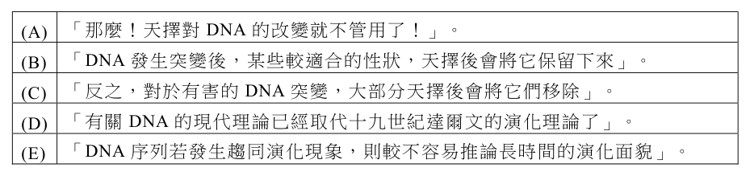
（A） 「那麼！天擇對 DNA 的改變就不管用了！」。（B） 「DNA 發生突變後，某些較適合的性狀，天擇後會將它保留下來」。（C） 「反之，對於有害的 DNA 突變，大部分天擇後會將它們移除」。（D） 「有關 DNA 的現代理論已經取代十九世紀達爾文的演化理論了」。（E） 「DNA 序列若發生趨同演化現象，則較不容易推論長時間的演化面貌」。答案：（B）（C）（E）
詳解與考點 正解：官方答案為 BCE；惟本筆 C 的擷取文字與答案鍵互相衝突，須以原卷完整對話核對。B：DNA 突變後，較適合環境的性狀較可能經天擇保留，有害突變多較易被淘汰，正確。C：官方答案將 C 列為正確；若原題完整對話包含對方指出現代 DNA 理論是補充、強化而非取代達爾文演化理論，該組對話才正確，但目前擷取內容僅有「已經取代」的錯誤敘述。E：不同支系若因相似環境壓力出現趨同演化，DNA 序列的相似未必來自共同祖先，會增加推論長時間演化面貌的困難，正確。
A：天擇主要篩選表現型，並會間接影響基因頻率；DNA 突變所造成的變異正是天擇可作用的材料，說天擇對其改變「不管用」錯誤。
D：選項內容空白，無從構成正確的科學敘述。
本題考點：現代演化綜合論——突變產生遺傳變異，天擇使有利變異在族群中較易保留；分子生物學補充而非推翻達爾文理論；比較 DNA 序列時須防範趨同演化造成的親緣誤判。
第 28 題 （多選）
下列關於火星的描述，哪些正確？（應選 2 項）
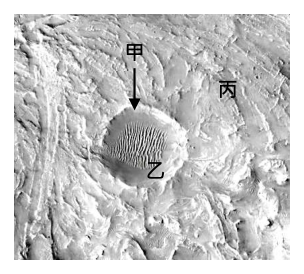
（A） 屬於類地行星（B） 由地球前往火星會通過小行星帶（C） 是與地球體積大小最相近的太陽系行星（D） 大氣濃密，表面主要因活躍的大氣活動而呈現棕紅色，以「大紅斑」最為著名（E） 表面曾經有流水的痕跡，表示火星曾經可能適合生命發展答案：（A）（E）
詳解與考點 正解：本題以行星分類、軌道位置與火星表面證據判斷。A：火星與水星、金星、地球同屬岩質的類地行星，故 A 正確。E：火星表面留有古河道、沖積三角洲等流水侵蝕與沉積痕跡，顯示過去可能有液態水，曾具備適合生命發展的環境，故 E 正確。
B：小行星帶位於火星與木星之間；由地球前往火星時仍在小行星帶內側，不會穿過小行星帶。
C：與地球體積大小最相近的是金星；火星半徑約僅地球的一半。它看起來對，是因為火星常被稱為與地球環境最常比較的行星，但體積最接近地球者其實是金星。
D：「大紅斑」是木星的大氣特徵；火星呈棕紅色主要因表面富含氧化鐵的塵土，且火星大氣稀薄，並非濃密。
本題考點：太陽系行星分類——水星、金星、地球、火星為類地行星；行星軌道判準——小行星帶在火星與木星間，地球至火星不會跨越；火星表面判讀——氧化鐵致紅色，古流水地形可作為曾有液態水的證據。
第 29 題
圖 13 是圖 12 的局部放大影像，當中可見（甲）小隕石坑、（乙）波紋狀的風成沙丘、（丙）三角洲。此地貌由老到新的形成順序為何？
（A） 甲-乙-丙甲（B） 乙-丙-甲丙（C） 丙-乙-甲（D） 丙-甲-乙 ㇠（E） 乙-甲-丙圖13答案：（D）
詳解與考點 正解：題幹要由地貌的疊置與覆蓋關係判斷先後。丙三角洲先由古湖泊流水搬運沉積形成；甲小隕石坑後來撞擊在既有三角洲地表；乙風成沙丘最後在乾燥期由風力堆積，覆蓋並修飾既有地形。因此由老到新為丙→甲→乙，D 正確。
A：甲在已存在的三角洲地表上形成，不能早於丙。
B：乙為後期覆蓋既有地形的風成沙丘，不能列為最早。
C：乙覆蓋並修飾既有地形，不能早於甲。
E：甲撞擊前須先有丙三角洲作為地表，故甲不能早於丙。它看起來對，是因為撞擊坑醒目，容易被誤認為最早事件。
本題考點：相對年代判定——被覆蓋、被切割或作為撞擊基底的地貌較早；覆蓋既有地形的沉積物較晚，依此將地貌依老到新排序。
第 30 題 （多選）
小蕙與小傑分別於甲、乙兩地點所拍得的星跡照片如圖 14。兩人皆面向東方，長時間曝光拍攝，下列哪些正確？（應選 2 項）
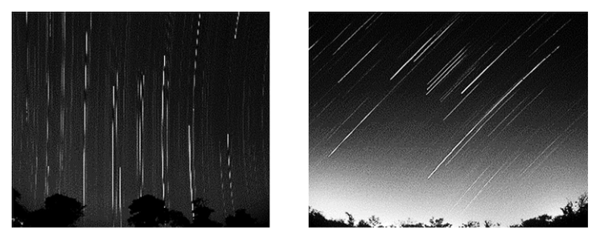
（A） 甲地位於北半球，且緯度高於 45 度（B） 乙地位於南半球，且緯度低於 45 度（C） 甲地相當接近赤道（D） 甲地的緯度，較乙地高（E） 乙地位於北半球，且緯度約等於 45 度答案：（C）（E）
詳解與考點 正解：兩人皆面向東方長時間曝光，關鍵是星跡與地平線的夾角約為 90°－緯度絕對值，並由圖 14 的星跡升起方向判斷南、北半球。C：圖中甲地星跡近乎直立升起，夾角接近 90°，所以緯度接近 0°、相當接近赤道，正確。E：圖中乙地星跡與地平線約呈 45° 傾斜，對應緯度絕對值約 45°；再依星跡升起方向可判定位於北半球，正確。
A：甲地星跡近乎直立，並非北半球緯度高於 45° 的斜向星跡，A 錯誤。
B：依圖中星跡升起方向，乙地位於北半球，且緯度絕對值約為 45°，不是南半球且緯度低於 45°，B 錯誤。
D：甲地緯度絕對值接近 0°，低於乙地約 45°，D 錯誤。
本題考點：星跡與緯度——面向東方時，星跡和地平線夾角約等於 90°－緯度絕對值；星跡近垂直表示接近赤道，約呈 45° 表示緯度絕對值約為 45°，所在半球則由圖中的星跡升起方向判定。
第 31 題
天體的顏色提供豐富訊息。例如：織女星發出藍白光芒，心宿二顏色偏紅，天王星外觀為藍綠色，火星呈暗紅色。依據以上描述，下列何者正確？
（A） 織女星的表面溫度比心宿二高（B） 天王星的表面溫度比火星高（C） 天王星的表面溫度比心宿二高（D） 織女星的發光能力比心宿二強（E） 火星的發光能力比心宿二強答案：（A）
詳解與考點 正解：恆星的顏色可用維恩位移定律判斷表面溫度，輻射峰值波長愈短，顏色愈偏藍、表面溫度愈高。A：織女星發藍白光，心宿二偏紅，因此織女星表面溫度比心宿二高，故 A 為正解。
B：天王星藍綠色來自大氣甲烷吸收紅光，屬反射與吸收現象，不可用恆星顏色規則比較；其雲頂溫度約-200℃，遠低於火星，B 錯誤。
C：同理，天王星顏色不是熱輻射顏色，不能與心宿二比較表面溫度，C 錯誤。
D：發光能力由半徑與溫度共同決定；心宿二是超紅巨星，光度遠超織女星，D 錯誤。
E：火星為反射太陽光的行星，不能以其外觀顏色與恆星心宿二比較發光能力，E 錯誤。
本題考點：天體顏色的判讀——恆星可用維恩位移定律由藍偏高溫、紅偏低溫比較表面溫度；行星顏色多受反射與大氣吸收影響，不能直接套用恆星色溫規則；光度還須同時考慮半徑與溫度。
第 32 題 （多選）
水以固體、液體與氣體三相存在於地球系統中，相變時會伴隨著潛熱釋放或吸收。下列哪些現象會伴隨潛熱釋放？（應選 3 項）
（A） 清晨時水氣凝結形成露珠時（B） 在高緯度地區冰直接變成水氣時（C） 地面積雪融化時（D） 水氣附著到凝結核上形成冰晶時（E） 夏季午後常見到的對流雲形成時答案：（A）（D）（E）
詳解與考點 正解：題幹關鍵是判斷相變的潛熱方向；氣態轉液態或固態會釋放潛熱。A：水氣凝結為露珠是氣態→液態，釋放潛熱，故 A 正確。D：水氣附著凝結核形成冰晶是氣態→固態的凝華，釋放潛熱，故 D 正確。E：對流雲形成時水氣凝結成水滴或凝華成冰晶，均釋放潛熱，且是雲體向上發展的能量來源，故 E 正確。
B：冰直接變成水氣是昇華，固態→氣態需吸收潛熱，B 錯誤。
C：積雪融化是固態→液態，需吸收熔化潛熱，C 錯誤。
本題考點：水的相變與潛熱——凝結、凝固、凝華釋放潛熱；蒸發、融化、昇華吸收潛熱；判斷時先寫出相態變化方向。
第 33 題
古人將所見星空，想成是繁星投影在一個無限大，以地球為中心且具有相同旋轉軸的天球。太陽一年的視軌跡為黃道，與天球赤道夾 23.5°。天球概念之示意圖如圖 15，若以地球繞太陽公轉來推論太陽在天球中的移動軌跡，圖中對北半球而言，太陽自春分到冬至的移動順序為下列何者？
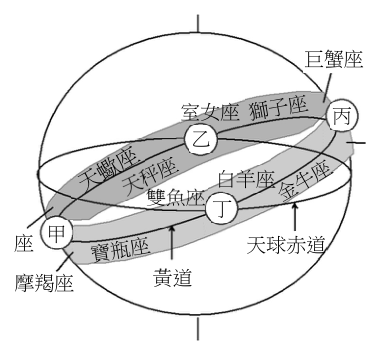
（A） 甲→乙→丙→丁（B） 乙→丙→丁→甲（C） 甲→丁→丙→乙（D） 丁→丙→乙→甲（E） 丙→丁→甲→乙答案：（D）
詳解與考點 正解：本題要沿黃道判斷太陽的週年視運動，關鍵是北半球從春分到冬至依序經過春分、夏至、秋分、冬至四個位置。春分時太陽在天球赤道上、黃道由南向北的升交點，為丁；夏至時到黃道最北、天球北側，為丙；秋分時回到天球赤道另一交點，為乙；冬至時到黃道最南、天球南側，為甲。因此順序為丁→丙→乙→甲，D 為正解。
A：甲→乙→丙→丁 是由冬至位置向反方向推回春分，與春分起算的順序不符，A 錯誤。
B：乙→丙→丁→甲 以秋分位置乙起算，首項不是春分點丁，B 錯誤。
C：甲→丁→丙→乙 雖包含四個節氣位置，但由冬至甲接到春分丁，並非題目所問春分到冬至的順序，C 錯誤。它看起來對，是因為黃道為閉合軌跡，若忽略題目指定的起點與方向，容易任取位置排列。
E：丙→丁→甲→乙 由夏至丙起算，且節氣先後次序不符，E 錯誤。
本題考點：太陽沿黃道的週年視運動——北半球依春分、夏至、秋分、冬至的順序移動；節氣位置判準——春分與秋分在天球赤道交點，夏至在黃道最北、冬至在黃道最南，先定四點再依時間排序。
第 34 題 （多選）
圖 16 是某年秋天某日東亞地區的衛星雲圖，H 表示高壓，白線為局部等壓線，灰線為甲天氣系統長帶狀的雲，乙為另一天氣系統， H 丙箭頭所指處為臺灣的位置。依圖，下列哪些甲較為正確？（應選 3 項）
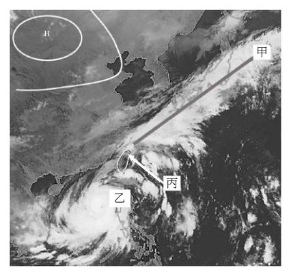
（A） 甲天氣系統長帶狀的雲為黑潮暖海溫所形成（B） 乙天氣系統的雲為颱風或熱帶低壓的雲系（C） 丙箭頭所指位置同時受到甲、乙兩天氣系丙統影響乙（D） 乙天氣系統是冷、暖氣團交會形成（E） 臺灣東北部要提防豪雨圖16答案：（B）（C）（E）
詳解與考點 正解：本題須依圖16辨認長帶狀鋒面雲與熱帶低壓渦旋雲，再判斷兩系統對臺灣的共同影響。B：依圖判讀，乙是颱風或熱帶低壓的雲系，正確。C：依圖中甲、乙與丙所指臺灣的相對位置，臺灣同時受兩個天氣系統影響，正確。E：秋季鋒面配合颱風外圍環流引進水氣，迎風面的臺灣東北部易有豪雨，須提防，正確，故正解為 B、C、E。
A：甲的長帶狀雲是冷、暖氣團交會形成的鋒面雲帶，不是黑潮暖海溫直接形成，A 錯誤。
D：冷、暖氣團交會形成的是甲鋒面；乙是熱帶系統，不是鋒面，D 錯誤。它看起來對，是因為乙同樣帶來雲雨，但兩者的成因不同，不能混為一談。
本題考點：衛星雲圖判讀——長帶狀雲對應鋒面，熱帶低壓或颱風雲系則依環流結構與位置辨認；複合天氣系統——秋季鋒面結合颱風外圍水氣時，迎風面的臺灣東北部易有豪雨。
第 35 題
根據短文，以下推論何者有顯著錯誤？
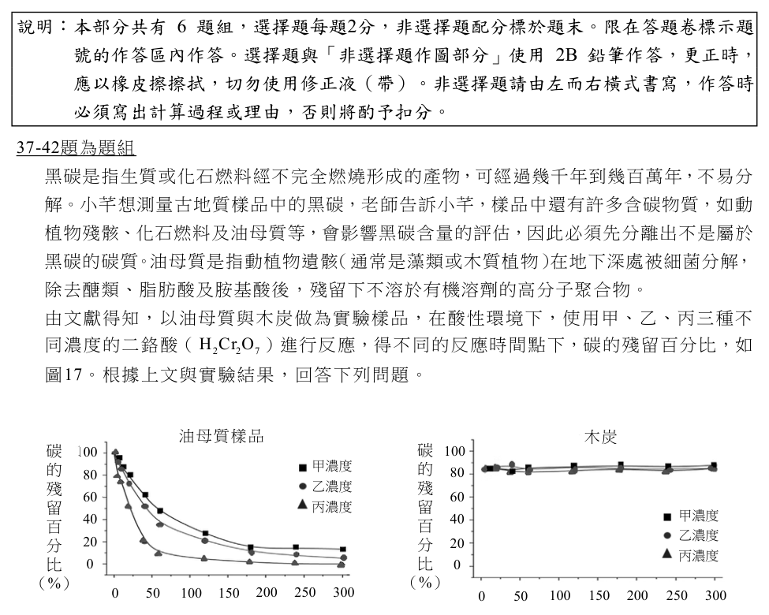
（A） 若鰻的幼魚被動地隨著黑潮漂送，則鰻苗於東亞的分布情形可以反應黑潮的流況分布（B） 福建海岸及臺灣西岸冬季都可能捕撈到鰻苗，表示黑潮水於冬季時會進入臺灣海峽（C） 已知黑潮平均流速約1 m/s，相對於日本九州海岸，臺灣鰻苗漁汛多半提早一至兩天（D） 鰻的幼魚利用黑潮移動，所以在日本、韓國、臺灣、大陸等地都可以捕撈鰻苗（E） 近岸海水及河流的污染，及生態環境破壞，可能是鰻魚產量變少的原因之一答案：（C）
詳解與考點 正解：題幹以黑潮平均流速 1 m/s 推估漁汛先後，關鍵是先把九州至臺灣沿岸約 1000 km 的距離換算為漂游時間。C：1000 km=1,000,000 m，所需時間=1,000,000 m÷1 m/s=1,000,000 秒；1 天=86,400 秒，1,000,000÷86,400≈11.6 天。臺灣漁汛相對九州應約提早 10 天以上，不是 1 至 2 天，故 C 有顯著錯誤。
A：幼魚若被動隨黑潮漂送，鰻苗出現的海域可反映黑潮及其流況的分布，推論合理。
B：福建海岸與臺灣西岸冬季均可捕到鰻苗，可合理推知有黑潮分支水流進入臺灣海峽，題文沒有與此相反的資訊。
D：日本、韓國、臺灣與大陸沿岸皆可捕撈鰻苗，與幼魚利用黑潮移動至近岸的敘述相符。
E：近岸海水、河流污染與棲地破壞會影響鰻魚生存及成長，作為產量減少的原因之一合理。
本題考點：依文本作定量推論——先統一距離與流速的單位，再以時間＝距離÷速度計算；顯著錯誤判準——計算結果約 11.6 天，若選項僅稱 1 至 2 天且差距逾 10 天，即不能成立。
第 36 題
鰻魚可感知鹽度以找尋適當河川。已知表層之黑潮水鹽度為 33 ‰，河水鹽度為 1 ‰，假設水體充分混合，當鰻魚所在水域之鹽度為 25 ‰時，黑潮水與河水混合的重量比例為何？
（A） 3:1（B） 2:3（C） 1:1（D） 3:2（E） 1:2答案：（A）
詳解與考點 正解：充分混合後的鹽度 25‰，應用質量守恆的加權平均。設黑潮水與河水重量分別為 x、y，則 (33x+1y)/(x+y)=25；33x+y=25x+25y；8x=24y；x：y=3:1。故黑潮水：河水=3:1，A 正確。
B：2:3 代入後鹽度為 (33×2+1×3)/(2+3)=69/5=13.8‰，不是 25‰。
C：1:1 代入後鹽度為 (33+1)/2=17‰，不是 25‰。
D：3:2 代入後鹽度為 (33×3+1×2)/5=101/5=20.2‰，不是 25‰。
E：1:2 代入後鹽度為 (33+1×2)/3=35/3≈11.67‰，不是 25‰。
本題考點：混合溶液濃度——以各成分的濃度乘重量後除以總重量；結果 25‰ 較接近黑潮水 33‰，因此黑潮水比例必大於河水，可作為驗算方向。
黑碳是指生質或化石燃料經不完全燃燒形成的產物，可經過幾千年到幾百萬年，不易分解。小芊想測量古地質樣品中的黑碳，老師告訴小芊，樣品中還有許多含碳物質，如動植物殘骸、化石燃料及油母質等，會影響黑碳含量的評估，因此必須先分離出不是屬於黑碳的碳質。油母質是指動植物遺骸（通常是藻類或木質植物）在地下深處被細菌分解，除去醣類、脂肪酸及胺基酸後，殘留下不溶於有機溶劑的高分子聚合物。由文獻得知，以油母質與木炭做為實驗樣品，在酸性環境下，使用甲、乙、丙三種不同濃度的二鉻酸（H₂Cr₂O₇）進行反應，得不同的反應時間點下，碳的殘留百分比，如圖 17。根據上文與實驗結果，回答下列問題。
第 37 題 （多選）
圖 17 顯示油母質與木炭樣品分別與二鉻酸溶液反應，得碳的殘留百分比不同。下列關於實驗結果與推論的敘述，哪些正確？（應選 2 項）
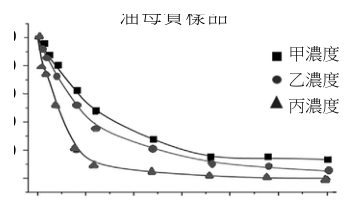
（A） 油母質中的碳質相較木炭中的碳質的分子量大（B） 油母質中的碳質顆粒較小，木炭中的碳質顆粒較大（C） 油母質中碳的殘留百分比較木炭為低，是因油母質較易與二鉻酸溶液反應（D） 油母質中的碳質比木炭中的碳質容易被還原（E） 木炭中碳的殘留百分比，不因二鉻酸溶液濃度的不同而有明顯差異答案：（C）（E）
詳解與考點 正解：題幹以二鉻酸處理油母質與木炭，圖中殘留百分比可用來判斷抗氧化反應的難易。C：油母質的碳殘留百分比比木炭低，表示油母質較易與二鉻酸溶液反應而被氧化分解，故 C 正確。E：木炭在甲、乙、丙三種濃度下的曲線幾乎重疊且維持高殘留，表示其碳殘留不因二鉻酸濃度不同而有明顯差異，故 E 正確。
A：殘留百分比只反映反應難易，無法推論碳質分子量大小，A 錯誤。
B：殘留百分比不能推論碳質顆粒大小，B 錯誤。
D：二鉻酸是氧化劑，實驗中碳是被氧化而非被還原，D 錯誤。它看起來對，是因為反應後碳減少容易被誤說成「被還原」，但應依氧化劑的作用方向判斷。
本題考點：實驗曲線判讀——殘留百分比下降較多表示樣品較易被氧化分解；推論界限——反應結果可比較抗氧化性，不能直接推得分子量或顆粒大小；氧化還原——二鉻酸作氧化劑時使碳質被氧化。
第 38 題
文獻中常以二鉻酸溶液來分離不屬於黑碳的物質，從圖 17 的結果，回答下列問題：甲、乙、丙三種溶液中的二鉻酸濃度大小關係為何？（2 分）濃度大小關係
本題選項為上圖中的 A／B／C／D，請對照圖片作答。
標準答案未收錄
詳解與考點 參考方向：二鉻酸為氧化劑，濃度越高、單位時間氧化分解碳質的能力越強，使碳的殘留百分比下降得越快、越低。觀察圖 17 油母質組三條曲線（甲、乙、丙）：殘留百分比下降最快、最低者對應濃度最高，下降最慢、殘留最高者對應濃度最低。依此比較三線的下降幅度與終點高低即可排出甲、乙、丙的濃度大小順序（殘留越低＝濃度越高）。作答時須明確寫出三者由大到小的不等關係，並以「殘留百分比與濃度成反向」作為判斷依據。此為 AI 整理之解題方向，非官方標準答案，須對照官方評分原則。
第 39 題 （多選）
燃燒煤或有機生質產生的黑碳可以懸浮於大氣中，形成懸浮微粒，並影響地球氣溫。若要估計黑碳對地球氣溫影響的程度，應該蒐集下列哪些資料比較合理？（應選 2 項）
（A） 大氣中黑碳的總量（B） 沉積於地殼中黑碳的總量（C） 黑碳中含碳分子的分子量（D） 單位重量黑碳微粒所吸收太陽輻射的量（E） 家用烹調與暖氣加熱所排放出的黑碳總量答案：（A）（D）
詳解與考點 正解：題幹要估計黑碳對地球氣溫的影響，關鍵是同時知道「大氣中實際懸浮多少黑碳」與「每單位黑碳吸收多少太陽輻射」。A：大氣中黑碳的總量提供影響規模的基礎；D：單位重量黑碳微粒所吸收太陽輻射的量，量化每單位黑碳的加熱能力。A、D 是估計黑碳輻射加熱效應的關鍵基礎資料，故 A、D 正確；更精確的氣溫影響評估仍需搭配粒徑分布、空間高度、雲層與地表反照率等其他大氣與輻射條件。
B：沉積於地殼中的黑碳已不再懸浮於大氣，不能直接反映其對大氣氣溫的影響，B 錯誤。
C：黑碳中含碳分子的分子量，不足以判斷其吸收太陽輻射的能力，C 錯誤。
E：家用烹調與暖氣加熱排放的黑碳只是來源之一，不能代表大氣中黑碳的實際總量，E 錯誤。它看起來對，是因為排放量與黑碳濃度有關，但還會受其他來源、傳輸與移除作用影響。
本題考點：黑碳的輻射影響——估計大氣增溫時，先量化大氣中懸浮黑碳總量，再乘以單位重量的太陽輻射吸收量為基礎依據；來源量與存量判準——排放來源不能直接代替大氣中的實際存量。
第 40 題
若黑碳沉降到極區冰川表面，對冰雪消融速率有何種影響？填入適當的詞彙。（2 分）冰雪消融速率會
本題選項為上圖中的 A／B／C／D，請對照圖片作答。
標準答案未收錄
詳解與考點 參考方向：黑碳為黑色微粒，落在白色冰雪表面會大幅降低反照率（albedo），使冰雪吸收更多太陽輻射、表面增溫，因此冰雪消融速率會「加快（增加／變快）」。可延伸：反照率下降→吸熱增加→正回饋，與全球暖化中極區冰川加速消融的機制一致。此為 AI 整理之解題方向，非官方標準答案，須對照官方評分原則。
第 41 題
在古土壤與二鉻酸充分反應移除不屬於黑碳的碳質後，以下實驗敘述，何者可以較易且最準確地得到樣品中黑碳含量？
（A） 直接烘乾秤重（B） 以有機溶劑充分潤洗後烘乾秤重（C） 在氧氣下點火充分燃燒，產生的氣體用排水集氣法收集（D） 在氧氣下點火充分燃燒後，產生的氣體依序通入過氯酸鎂、氫氧化鈉後再分別秤重（E） 通入氫氣反應，測量生成的甲烷體積答案：（D）
詳解與考點 正解：先以二鉻酸移除非黑碳碳質後，要「最準確」定量黑碳。應使碳完全燃燒成 CO2，再以吸收劑的增重換算碳量。D：在氧氣下充分燃燒後，過氯酸鎂吸收 H2O、氫氧化鈉吸收 CO2，分別秤重；由 CO2 的增重可換算碳含量，故 D 為正解。
A：直接烘乾秤重仍包含雜質，不能只量到碳。
B：有機溶劑潤洗後烘乾仍可能有非碳雜質，且沒有以產物定量碳。
C：CO2 部分溶於水，排水集氣法的體積讀值誤差較大，不易準確定量。
E：通入氫氣生成甲烷的反應條件不切實際，也難以準確定量。
本題考點：燃燒分析——含碳物完全燃燒時，碳轉為 CO2；定量判準——以特定吸收劑吸收產物並量測增重，可避免雜質與氣體溶解造成的誤差；吸收劑辨識——過氯酸鎂吸收 H2O，氫氧化鈉吸收 CO2。
第 42 題 （多選）
「碳循環」有地球的控溫系統之稱，下列有關碳循環的敘述哪些正確？（應選 3 項）
（A） 火山噴發會將岩石圈內的二氧化碳釋放至大氣中（B） 植物會進行消除二氧化碳的作用，也會進行呼吸作用釋放二氧化碳（C） 海水可無限制地溶入二氧化碳，藉由溫鹽環流帶往深海，再將其封存於岩石圈（D） 扣除人類活動影響，大氣中二氧化碳的比例從地球誕生以來無大幅度改變（E） 人類大量使用化石燃料，將大量二氧化碳釋放到大氣中，破壞了原有的碳循環平衡答案：（A）（B）（E）
詳解與考點 正解：題幹問碳循環各儲庫間的碳交換，關鍵在於判斷碳是否能由岩石圈、植物或化石燃料轉入大氣，以及儲存是否有物理上限。A：火山噴發確會將岩石圈中的碳，例如碳酸鹽岩或岩漿中的碳，以 CO2 釋入大氣，正確。B：植物以光合作用吸收 CO2，也會以呼吸作用釋放 CO2，正確。E：人類大量燃燒化石燃料，會把長期封存的碳快速釋入大氣，破壞原有碳循環平衡，正確，故選 ABE。
C：海水溶解 CO2 有飽和上限，不能「無限制地」溶入並封存，C 錯誤。它看起來對，是因為溫鹽環流確能把部分溶解碳帶往深海，但「無限制」違反溶解度限制。
D：扣除人類活動後，大氣中 CO2 的比例自地球誕生以來仍曾大幅變動，例如早期含量遠高於今日，D 錯誤。
本題考點：碳循環與碳儲庫交換——火山可將岩石圈碳釋入大氣，植物同時進行光合作用與呼吸作用；海洋碳匯判準——海水吸收 CO2 受溶解度與飽和限制，選項出現「無限制」須優先檢驗；人為擾動——化石燃料燃燒會加速封存碳回到大氣。
某海岸有不同高程的海階，如圖18的 T0 至 T3 所示。海階常有海蝕凹壁。小莉推論海蝕凹壁為當地堅硬的火成岩壁受潮水長期侵蝕而成。海蝕凹壁上常有大量的穿孔貝附著在凹壁上。穿孔貝僅在潮起潮落之間的高度存活，無法長期離開水面。因此，小莉推論此海階上的海蝕凹壁主要由大地震所造成的垂直抬升而成。小莉詳細丈量每個海階和海蝕凹壁的高程，並利用凹壁上穿孔貝的碳進行碳-14定年分析。所得的結果如表3所示。
第 43 題
該海蝕凹壁生成的過程中，下列何項地質作用影響最小？
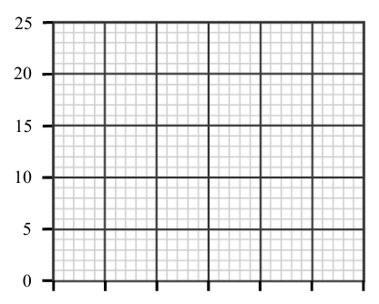
（A） 侵蝕作用（B） 搬運作用（C） 變質作用（D） 風化作用（E） 大地震瞬間抬升答案：（C）
詳解與考點 正解：海蝕凹壁由潮水長期作用岩壁形成，並可因地震抬升而離開潮間帶保存；應選與此過程關聯最小的作用。C：變質作用是岩石在高溫、高壓下礦物組成改變的深部地質作用，與海蝕凹壁的塑形無直接關係，故 C 為正解。
A：潮水沖蝕岩壁是海蝕凹壁形成的直接侵蝕作用，A 錯誤。
B：侵蝕後的物質由海水帶走，搬運作用參與海岸地形演變，B 錯誤。
D：日曬、鹽分等風化會使岩石崩解，與凹壁形成有關，D 錯誤。
E：大地震瞬間抬升可使原在潮間帶的凹壁脫離海面而保存，E 錯誤。
本題考點：海岸地形——海蝕凹壁由海水侵蝕、風化與物質搬運共同塑形；地殼變動——垂直抬升可保存原有海蝕地形；作用分類——變質作用屬深部高溫高壓環境，非本題海岸成因。
第 44 題 （多選）
有關碳-14 定年的敘述，下列哪些正確？（應選 2 項）
（A） 碳-14定年法為絕對地質年代定年法（B） 碳-14具放射性（C） 碳-14之半衰期約為5730年，此定年方式適用於時間尺度十萬年以上事件之探討（D） 碳-14定年中，母元素含量的比例隨時間呈線性衰減（E） 碳-14和碳-12是同位素，碳-14的原子核由8個質子和6個中子組成答案：（A）（B）
詳解與考點 正解：題幹問碳-14 定年的性質，判斷關鍵是「放射性衰變可換算年代」及碳-14 的原子結構。A：碳-14 依放射性衰變推得明確年代數值，屬絕對地質年代定年法，正確。B：碳-14 會放出 β 粒子衰變為氮-14，具放射性，正確，故選 AB。
C：碳-14 的半衰期約為 5730 年，適用範圍約在 5 萬年內，不適合探討十萬年以上事件，C 錯誤。它看起來對，是因為「半衰期長達數千年」容易讓人高估可定年的時間尺度。
D：放射性衰變中母元素含量隨時間呈指數衰減，不是線性衰減，D 錯誤。
E：碳的原子序固定為 6，故碳-14 原子核有 6 個質子和 8 個中子；選項把兩者寫反，E 錯誤。
本題考點：碳-14 定年——利用放射性衰變換算絕對年代，適用約 5 萬年內的材料；半衰期判準——母元素含量隨時間指數衰減，不能用線性關係推估；同位素結構——同元素質子數相同，中子數以質量數減原子序求得。
第 45 題
若此海岸海階的形成主要由偶發大地震事件所引起，假設在兩次大地震之間無明顯抬升與海水面高度變化，請依下列坐標軸與表 3 的數據，畫出此海岸T 到T 期間，最符合上 0 3 述地體抬升情形之累積高程（縱軸）隨時間（橫軸）的變化圖（2 分）。注意：由大地震引起的快速抬升，和緩慢抬升是有所不同的。並列式計算此海岸T 到T 期間的平均抬升 0 3 速率（單位為 mm/年，計算至小數點第一位）（2 分）
本題選項為上圖中的 A／B／C／D，請對照圖片作答。
標準答案未收錄
詳解與考點 參考方向：圖形—因每次大地震造成快速抬升、震間無抬升，累積高程隨時間應呈「階梯狀」：在定年點（約 800、1600、2400 年）出現近乎垂直的躍升，兩次地震之間為水平線段，而非平滑斜線。平均抬升速率＝總抬升量÷總時間。由表 3，T0 到 T3 累積抬升約 18 m=18000 mm，歷時約 2400 年，平均抬升速率約 18000÷2400≈7.5 mm/年。（請以官方表 3 實際數值與單位為準計算）此為 AI 整理之解題方向，非官方標準答案，須對照官方評分原則。
新冠肺炎（Coronavirus Disease 2019, COVID-19）是由SARS-CoV-2導致的傳染性肺炎，並且引發全球大流行之疫情。依據您所學的生物學知識及最近社會大眾對病毒、疫苗及疫情之關心及問題探討，回答46-48題。
第 46 題 （多選）
圖 19 為冠狀病毒 RNA 中核苷酸之模式圖，有關此圖之描述下列哪些正確？（應選 3 項）丙
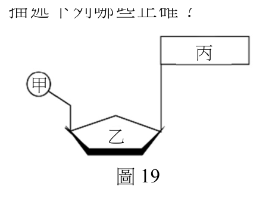
（A） 甲為磷酸基甲（B） 乙為去氧核糖（C） 丙可能是胞嘧啶乙（D） 丙可能是鳥糞嘌呤（E） 丙不可能是尿嘧啶圖19答案：（A）（C）（D）
詳解與考點 正解：RNA 核苷酸由磷酸基、核糖與含氮鹼基組成，鹼基可為 A、U、G、C；先依圖 19 的連接位置判讀甲、乙、丙。A：圖中甲位於磷酸基的位置，正確。C、D：圖中丙位於含氮鹼基的位置，胞嘧啶與鳥糞嘌呤都可能出現在 RNA 中，正確，故選 A、C、D。
B：依圖 19，乙是 RNA 的核糖，不是 DNA 所含的去氧核糖，錯誤。
E：RNA 以尿嘧啶 U 取代胸腺嘧啶，丙可能是尿嘧啶，因此「不可能是尿嘧啶」錯誤。
本題考點：RNA 核苷酸組成——磷酸基＋核糖＋含氮鹼基；判準是 RNA 的五碳糖為核糖，鹼基為 A、U、G、C，DNA 才含去氧核糖與胸腺嘧啶。
第 47 題 （多選）
有關冠狀病毒在目前三域生物分類系統歸類的敘述，哪些正確？（應選 2 項）
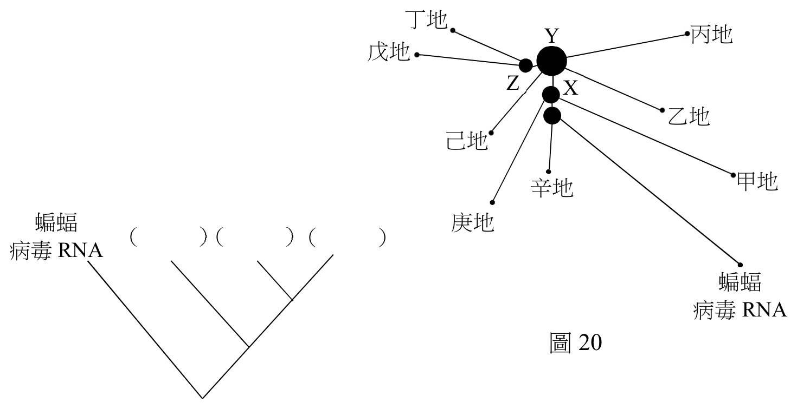
（A） 此病毒長度通常小於1 µm，長度太小是目前生物分類系統未將病毒列入的原因（B） 此病毒之核心不具DNA，是被排除在目前生物分類系統之外的主要原因（C） 此病毒缺乏基本的細胞結構，故尚待分類學者引入生物分類系統（D） 此病毒的基因重組現象相當高，故較不適於分析同源結構來重建其演化關係（E） 此病毒SARS-CoV-2未使用二名法為學名，是目前尚未將它納入生物系統之主因答案：（C）（D）
詳解與考點 正解：題幹問病毒未列入三域分類系統的原因與演化分析限制，核心在病毒不是細胞生物。C：冠狀病毒缺乏基本細胞結構、核糖體與獨立代謝能力；三域系統以細胞生物為分類基礎，因此病毒尚未納入。D：RNA 病毒如冠狀病毒突變率高且基因重組頻繁，會干擾以傳統同源結構比對重建演化關係的判讀。
A：病毒未納入三域系統的主因不是長度小於 1 µm，而是缺乏細胞結構。
B：SARS-CoV-2 的核心含單股正鏈 RNA，並非不具核酸；即使病毒不含 DNA，也不是被排除的主要理由。
E：是否採二名法命名不是三域系統排除病毒的原因，關鍵仍是病毒不具細胞性。
本題考點：三域分類系統——分類對象是具有細胞結構的生物；病毒特徵——病毒含核酸但缺乏完整細胞構造與獨立代謝；演化判讀——高突變與重組會使傳統同源比較的訊號更複雜。
第 48 題
分析不同新冠病毒的完整基因體，並以來自蝙蝠之病毒 RNA 做為親緣關係網絡圖的根，如圖 20，其中之線段長度代表 RNA 序列之差異丁地程度；X、Y 及 Z 分別為不同中心點變異病毒株 Y 丙地戊地的 RNA；以及甲～辛等代表各地點病毒株的 Z X RNA。請擷取此圖資訊，繪一個蝙蝠病毒 RNA、乙地 X、Y 及 Z 之分支關係圖。（3 分）並寫出哪一地己地點的病毒 RNA，與 X 和蝙蝠病毒 RNA 親緣關甲地辛地係最接近。（1 分）蝙蝠庚地（）（）（）病毒RNA 蝙蝠病毒RNA 圖20 49-54
本題選項為上圖中的 A／B／C／D，請對照圖片作答。
標準答案未收錄
詳解與考點 參考方向：依親緣關係網絡圖以蝙蝠病毒 RNA 為根，繪製分支圖時，將與根分歧最早者畫在最外側、分歧愈晚者彼此愈接近，依圖中線段長度（代表序列差異）判斷 X、Y、Z 與蝙蝠 RNA 的遠近並畫出樹狀分支。與 X 及蝙蝠病毒 RNA 親緣最接近者，應為在圖上位於 X 與根之間、分支節點最靠近根且線段差異最小的那個地點病毒株。實際答案須依官方圖 20 的線段長度判讀。此為 AI 整理之解題方向，非官方標準答案，須對照官方評分原則。
測量血液流速的血流儀是以都卜勒效應為原理製成。若血流儀的感測器以頻率為 \(f\) 的聲波或光波入射到血液，而接收到的反射波頻率為（ \(f+\Delta f\) ），\(\Delta f\) 的量值與血液流速可近似為成正比。圖21為探究飲酒對於血液流速影響的監測數據曲線。
第 49 題 （多選）
飲酒後，血液流速隨著時間變化可近似為週期波，且有高頻低幅的成分與低頻高幅的成分。如圖 21 所示，飲酒後的監測數據曲線猶如週期大且振幅大的波動與週期小且振幅小的波動疊加，其中前者稱為低頻高幅，後者稱為高頻低幅。假設高頻的成分頻率為 f ， H 低頻的成分頻率為 f ，依據這項血液流速的探究與分析，下列哪些正確？（應選 2 項） S
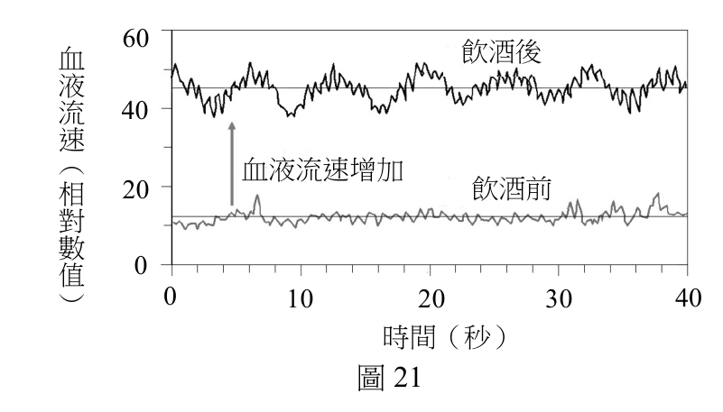
（A） \(f_H \approx 10\) Hz（B） \(f_H \approx 1\) Hz（C） \(f_S \approx 1\) Hz（D） \(f_S \approx 0.1\) Hz（E） \(f_S \approx 10\) Hz答案：（B）（D）
詳解與考點 正解：題幹區分高頻低幅與低頻高幅，應由週期 T 先估頻率 f=1/T。B：高頻低幅成分約每 1 秒完成 1 次波動，T≈1 s，所以 fH≈1 Hz，正確。D：低頻高幅成分約每 10 秒完成 1 次大波動，T≈10 s，所以 fS≈1/10=0.1 Hz，正確，故 B、D 為正解。
A：若 fH≈10 Hz，週期應約 0.1 s，圖中的細波並沒有如此密集。
C：若 fS≈1 Hz，週期應約 1 s，與約 10 秒一個大波動不符。
E：若 fS≈10 Hz，週期應約 0.1 s，與低頻高幅的長週期特徵相反。
本題考點：週期與頻率——f=1/T；先由圖的時間尺度估計一個完整波動所需秒數，再換算頻率；週期愈短頻率愈高，週期愈長頻率愈低。
第 50 題
感測器靜止放置在皮膚表面，已知血液的流動方向使血液中的物質接近感測器，若監測血液流速的光波其特性代號如表 4 所示，則在相同的介質之中，入射波與反射波特性的關係，何者正確？
表 4 波速 波長 頻率 週期 入射波特性代號 \( v_{\mathrm{I}} \) \( \lambda_{\mathrm{I}} \) \( f_{\mathrm{I}} \) \( T_{\mathrm{I}} \) 反射波特性代號 \( v_{\mathrm{R}} \) \( \lambda_{\mathrm{R}} \) \( f_{\mathrm{R}} \) \( T_{\mathrm{R}} \)
（A） \( v_{\mathrm{I}} > v_{\mathrm{R}} \)（B） \( f_{\mathrm{I}} > f_{\mathrm{R}} \)（C） \( T_{\mathrm{I}} < T_{\mathrm{R}} \)（D） \( \lambda_{\mathrm{I}} > \lambda_{\mathrm{R}} \)（E） \( \lambda_{\mathrm{I}} = \lambda_{\mathrm{R}} \)答案：（D）
詳解與考點 正解：血液中的物質接近靜止感測器時，反射光產生都卜勒頻移，反射波頻率較入射波高，即 fR=fI＋Δf，且 Δf>0，所以 fR>fI。在相同介質中波速由介質決定，vI=vR；由 v=fλ，λI=vI÷fI、λR=vR÷fR。因 vI=vR 且 fR>fI，所以 λI>λR，D 正確。
A：同一介質中的光波波速由介質決定，vI=vR，不是 vI>vR。
B：血液接近感測器時應為 fR>fI，不是 fI>fR。
C：T=1÷f；因 fR>fI，所以 TR<TI，不是 TI<TR。
E：波長相等須頻率相等才可能成立；本題有都卜勒頻移，fR>fI，因此 λI 不等於 λR。
本題考點：都卜勒效應——反射物接近感測器時，反射波頻率升高；波的關係式——同一介質中 v 不變，依 v=fλ 推得頻率升高時波長變短，並以 T=1÷f 判斷週期。
第 51 題
圖 22 為波自介質 A 射入介質 B 的示意圖。波在介質 A 中波速較慢，在介質 B 中波速較快。箭號實線代表入射線，虛線為延伸線。在答題卷中的作答區畫出（1）法線；（1 分）（2）波進入介質 B 之後的折射線。折射線只需要畫出示意的偏右上、偏左下、或沿虛線不偏折。（1 分）介質B 介質A 圖22
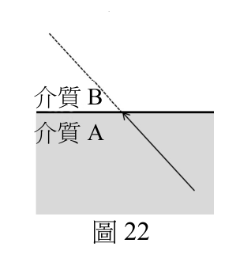
本題選項為上圖中的 A／B／C／D，請對照圖片作答。
標準答案未收錄
詳解與考點 參考方向：（1）法線—在波由介質 A 進入 B 的界面入射點上，畫一條垂直於介質交界面的直線即為法線。（2）折射線—波在 A 中波速較慢、進入 B 後波速較快，依折射定律折射角大於入射角，折射線會「偏離法線」。若入射線從左下射向右上的界面，進入 B 後折射線應更偏離法線（即題目所述偏向遠離法線一側）。判斷口訣：由慢介質進入快介質，折射線遠離法線。實際偏向需對照圖 22 入射線方向作圖。此為 AI 整理之解題方向，非官方標準答案，須對照官方評分原則。
第 52 題
承題，依據生物學知識判斷，血液流速變化中高頻的成分 f ，主要是由下列何種作 49 H 用或機制所影響？
（A） 呼吸（B） 心跳（C） 排泄（D） 酒精發酵（E） 能量產生答案：（B）
詳解與考點 正解：血流儀以都卜勒效應量測，Δf 的量值近似與血液流速成正比；關鍵是流速訊號中的「高頻」成分，應找每秒等級、規律而快速的生理週期。B：心臟搏動會週期性推動血液，形成脈動血流，是血流速度高頻起伏的主要來源，故 B 為正解。
A：呼吸週期通常數秒一次，變化較慢，屬低頻成分而非高頻成分，A 錯誤。它看起來對，是因為呼吸也會影響循環與血流，但其週期遠慢於心跳。
C：排泄不是造成瞬時血流速度規律振盪的週期性機制，C 錯誤。
D：酒精發酵不是人體內調節血流速度的生理機制，不會產生規律高頻振盪，D 錯誤。
E：能量產生是細胞代謝過程，並非直接使血流呈現每秒級週期波動的節律來源，E 錯誤。
本題考點：都卜勒血流量測——反射波頻率改變 Δf 的量值近似正比於血液流速；生理節律頻率——心跳為每秒級的快速週期，呼吸為數秒級較慢週期，判讀曲線時以振盪週期區分高低頻來源。
第 53 題
依據圖 23 中之血液抹片圖，並假設血流儀射入一波長 800 奈米的雷射光，則反射波主要由下列何者所反射？
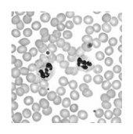
（A） 紅血球（B） 白血球（C） 血小板（D） 蛋白質圖23（E） 水答案：（A）
詳解與考點 正解：800 nm 雷射照射血液時，哪一種成分會形成主要反射或散射訊號。紅血球是血液中最主要、數量最多的有形成分，能有效散射入射光，因此血流量測的主要訊號來自紅血球，故 A 為正解。
B：白血球雖能散射光，但數量遠少於紅血球，對總訊號的貢獻較小，錯誤。
C：血小板體積小，對總散射訊號的貢獻不及紅血球，錯誤。
D、E：血漿中的蛋白質與水構成連續介質，並非此血流量測中主要的反射或散射來源，故兩者皆錯誤。
本題考點：都卜勒血流量測——判斷主要反射來源時，應比較血液各成分的數量與散射能力；紅血球是主要有形成分，因此構成主要訊號來源。
第 54 題
假設血流儀的雷射光能精準射入某器官的動脈（A）、微血管（C）及靜脈（V），且反射出的雷射光頻率變化分別為 \(f_A\)、\(f_C\) 及 \(f_V\)。依血管之功能、管壁彈性和厚度、管腔之大小等因素來推斷，\(f_A\)、\(f_C\)、\(f_V\) 之大小關係應如何才合理？（2 分）\(f_A\)、\(f_C\)、\(f_V\) 大小關係為：________________________________________。
標準答案未收錄
詳解與考點 參考方向：Δf 正比於血液流速，故比較 fA、fC、fV 即比較動脈、微血管、靜脈的血流速度。動脈管壁厚且彈性大、直接承受心臟壓力，流速最快；微血管管腔極細、總截面積最大，流速最慢以利物質交換；靜脈流速介於兩者之間。故合理關係為 fA > fV > fC（即動脈最大、微血管最小）。此為 AI 整理之解題方向，非官方標準答案，須對照官方評分原則。
含有 Cr（VI）的化合物，如鉻酸根離子（CrO₄²⁻），簡稱六價鉻。生活用品的製程中常產生六價鉻，成為影響水源的污染物。美國國家環境保護署（U.S. EPA）與世界衛生組織（WHO），分別建議飲用水的鉻含量不可高於 100 ppb 與 50 ppb（10⁻⁹，即十億分之一）。如何有效移除水中六價鉻，一直是科學家試圖解決的課題。受到海綿的多孔結構可以吸水的啟發，科學家以具有多孔結構的有機金屬骨架（簡稱 MOF），吸附水中的六價鉻。MOF 材料除了能移除水中六價鉻外，亦可在酸性水溶液中，經照光將六價鉻轉變成毒性較低的三價鉻（Cr（III））化合物，並將材料再生使用。
第 55 題 （多選）
將相同重量的 MOF 材料，放入兩杯體積相同但六價鉻濃度不同的水溶液，靜置 30 分鐘後，測量水中六價鉻濃度，其結果顯示於圖 24。下列敘述，哪些正確？（應選 3 項）
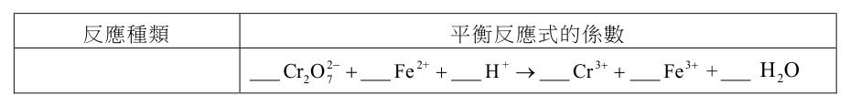
（A） MOF材料在溶液一與溶液二中，對六價鉻的 500 六初始濃度移除率均高於70% 經吸附材料處理價 400 過的最後濃度（B） MOF材料在溶液一與溶液二中，對六價鉻的鉻 300 移除率均低於30% 濃（C） 處理過後的溶液一都同時符合EPA與WHO的度 200 （ppb）飲用水標準 100（D） 處理過後的溶液二都同時符合EPA與WHO的 0 飲用水標準溶液一溶液二（E） 本實驗的目的在測試MOF材料對於水溶液中圖24 六價鉻的吸附能力答案：（A）（D）（E）
詳解與考點 正解：題幹比較兩杯溶液處理前後的六價鉻濃度，須以圖 24 判讀移除率與標準線。A：兩溶液處理後濃度相對初始濃度都大幅下降，移除率均高於 70%，正確。D：溶液二處理後濃度同時低於 EPA 100 ppb 與 WHO 50 ppb 的飲用水標準，正確。E：以相同重量 MOF 處理兩種濃度溶液後測量六價鉻，正是在測試其吸附移除能力，正確，故 A、D、E 為正解。
B：與圖示的大幅下降及 A 的移除率判讀相反，移除率不可能均低於 30%。
C：溶液一處理後雖下降，仍未同時低於 EPA 與 WHO 標準，因此不符合。
本題考點：濃度圖表判讀——移除率＝（初始濃度－處理後濃度）÷初始濃度×100%；判斷合格時，處理後濃度必須同時低於題示的每一條標準線；實驗變因與量測結果可用來辨識吸附能力。
第 56 題 （多選）
科學家將 MOF 材料與聚合物結合，做成方便回收的錠型材料（簡稱 MOF@聚合物），並測試 MOF 材料與聚合物結合對於吸附六價鉻的能力，結果如圖 25 所示。下列敘述，哪些正確？（應選 3 項）
（A） 「吸附材料的種類」為本實驗中的操縱變 5 因六價 4（B） 此MOF材料、錠型材料與聚合物對六價鉻鉻的吸附能力實驗，三者應使用相同初始濃 3 初始濃度濃經吸附材料度的六價鉻度處理過的最 2 後濃度（ppm）（C） 剔除聚合物對於六價鉻的吸附實驗，對於 1 MOF@聚合物實驗結果解讀沒有影響（D） MOF@聚合物形成的材料，增加了使用上 0 MOF@ 的方便性，但卻犧牲了對六價鉻的吸附能初始濃度 MOF 聚合物聚合物力圖25（E） 單獨使用聚合物，幾乎沒有移除水溶液中六價鉻的能力答案：（A）（B）（E）
詳解與考點 正解：本題比較 MOF、MOF@聚合物與聚合物處理六價鉻後的濃度，關鍵是三種吸附材料在相同初始濃度下的比較；應由變因控制與圖中處理後濃度判斷。A：實驗刻意改變的是「吸附材料的種類」，再觀察六價鉻最後濃度，故吸附材料種類是操縱變因，A 正確。B：要公平比較三者的吸附能力，三組都須使用相同初始濃度的六價鉻溶液；初始濃度是控制變因，B 正確。E：聚合物組處理後的六價鉻濃度幾乎與初始濃度相同，表示單獨使用聚合物幾乎沒有移除六價鉻的能力，E 正確。
C：聚合物組是必要的對照組；沒有它便無法分辨 MOF@聚合物的效果來自 MOF 還是聚合物，故不可剔除，C 錯誤。
D：圖中 MOF@聚合物雖增加回收使用的方便性，但處理後濃度仍顯示其吸附能力佳，未明顯犧牲吸附能力，D 錯誤。它看起來對，是因為加入聚合物可能讓人預期 MOF 含量下降，但判斷仍須以圖示的實驗結果為準。
本題考點：實驗變因——操縱變因是研究者刻意改變的材料種類，控制變因如初始濃度須保持一致；對照組判讀——單獨聚合物組可分離聚合物本身的效果；圖表比較——處理後濃度越低，代表移除六價鉻能力越強。
第 57 題
此 MOF 材料在酸性及照光的條件下，可產生如下的反應：
Cr₂O₇²⁻ ＋ H⁺ → Cr³⁺ ＋ H₂O ……式（1）
此外，小美於化學課中，也學到如下的反應式：
Cr₂O₇²⁻ ＋ Fe²⁺ ＋ H⁺ → Cr³⁺ ＋ Fe³⁺ ＋ H₂O ……式（2）
試問反應式（2）是屬於哪一種類的反應？寫出式（2）平衡反應式的係數（係數為最簡整數比）。（4 分）
作答欄位——反應種類：＿＿＿；平衡反應式的係數：＿Cr₂O₇²⁻ ＋ ＿Fe²⁺ ＋ ＿H⁺ → ＿Cr³⁺ ＋ ＿Fe³⁺ ＋ ＿H₂O
本題選項為上圖中的 A／B／C／D，請對照圖片作答。
標準答案未收錄
詳解與考點 參考方向：式（2）中 Cr 由 +6(Cr2O7^2-)降為 +3、Fe 由 +2 升為 +3，有電子轉移，屬「氧化還原反應」。配平：每個 Cr 得 3e-、2 個 Cr 共得 6e-，需 6 個 Fe^2+ 供 6e-；再以電荷與原子守恆配 H+ 與 H2O。係數為 Cr2O7^2- : Fe^2+ : H+ : Cr^3+ : Fe^3+ : H2O = 1 : 6 : 14 : 2 : 6 : 7。此為 AI 整理之解題方向，非官方標準答案，須對照官方評分原則。
量子科學以光電科技改善了生活，也增進了質量國際標準的精密與穩定。科學家發現電壓、電阻與電磁波能量等電磁量的量子單元，與普朗克常數 \(h\) 相關，因此訂 \(h = 6.62607015 \times 10^{-34}\ \mathrm{J \cdot s}\) 為新的質量基準。工程師使用類似於圖 26 的電磁天平來校準質量，並利用經過量子單元校正的電磁量，來測量與換算線圈的電壓與電流，藉以連結質量 \(M\) 與普朗克常數 \(h\)。某生利用積木製作一座類似於圖 26 等臂的電磁天平。圖中右側為秤盤，左側為線圈和磁鐵，X 與 Y 代表固定磁鐵的兩極。以支點為軸，線圈與秤盤可以是維持於水平的靜態模式，或上下微幅振動的動態模式。
第 58 題
關於文中提到的物理量，哪個為基本量？
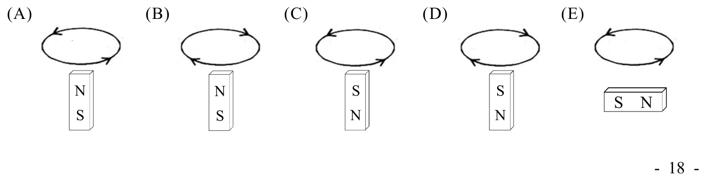
（A） 質量（B） 電阻（C） 電壓（D） 能量（E） 磁場答案：（A）
詳解與考點 正解：題幹問「基本量」，應以國際單位制的七大基本量判斷，而非看該量是否在文中被用來測量。A：質量是 SI 七大基本量之一，故 A 為正解。
B、C：電阻與電壓皆為導出量，須由電流、長度、時間、質量等基本量組合定義；例如電壓單位 V 可由 kg、m、s、A 導出，B、C 錯誤。
D、E：能量與磁場也都是導出量，不屬於 SI 基本量，D、E 錯誤。它們看起來容易被選，是因為題文多次提到電磁量與能量，但「文中重要」不等於「基本量」。
本題考點：SI 基本量——長度、質量、時間、電流、溫度、物質量、發光強度為七大基本量；導出量判準——物理量若可由基本量的組合單位表示，即為導出量。
第 59 題 （多選）
靜態模式時，無電流的線圈與空的秤盤質量相同，天平最初處於水平靜止狀態。待測物置入秤盤之後，參照圖 26，下列線圈電流與磁極方向的組合，哪些能使天平恢復平衡？（應選 2 項）
本題選項為上圖中的 A／B／C／D，請對照圖片作答。
答案：（A）（D）
詳解與考點 正解：待測物置入右側秤盤後，右側力矩增加，左側線圈必須受到向上磁力才能恢復平衡；依圖 26 所示電流與 X、Y 磁極，以佛萊明左手定則判斷安培力方向。A：線圈所受安培力向上，可提供與右側增加重量相配的力矩，故 A 正確。D：其電流與磁場組合亦使線圈受力向上，故 D 正確。
B：依圖 26 的電流與磁極方向套用左手定則，線圈受力不是向上，不能補償右側增加的力矩，B 錯誤。
C：依圖 26 的電流與磁極方向判斷，線圈受力不是向上，天平無法恢復平衡，C 錯誤。
E：只反轉電流或磁場其中一者才會反轉安培力；依圖 26 同時核對兩個方向後，此組合不會使線圈受到所需的向上力，E 錯誤。
本題考點：等臂天平與安培力——右側加重時，左側必須增加向上力以平衡力矩；安培力方向必須由磁場與電流共同判斷，只有受力向上的組合符合。
第 60 題
靜態模式時，線圈電流 \( I \) 與磁鐵之間的作用力量值為 \( F_{\mathrm{B}} = f_{\mathrm{B}} I \)。由於缺乏檢測 \( f_{\mathrm{B}} \) 的設備，無法從靜態模式求得待測物的質量 \( M \)。但可知，當線圈相對於磁鐵移動的速度為 \( v \) 時，線圈的感應電動勢（電壓）為 \( V = f_{\mathrm{B}} v \)，動態模式與靜態模式的 \( f_{\mathrm{B}} \) 相同，示意如圖 27。
分析線圈速度 \( v \)，以及對應的電壓表讀數 \( V \)，其數據如表 5，並繪製感應電壓對線圈速度（\( V \)-\( v \)）的關係圖，如圖 28 所示，藉以推算 \( f_{\mathrm{B}} \) 值。當天平達靜態平衡時，線圈電流為 \( I = 40 \) mA，試以 kg 為單位，計算待測物的質量，須寫出計算步驟，並四捨五入至小數第 1 位。（4 分）（已知重力加速度量值 \( g = 9.8 \) m/s²）
表 5 線圈速度 \( v \)（mm/s） −3.8 −2.2 0.1 1.8 3.6 感應電壓 \( V \)（mV） −95 −55 2.5 45 90
本題選項為上圖中的 A／B／C／D，請對照圖片作答。
標準答案未收錄
詳解與考點 參考方向：動態模式 V = fB·v，由表 5 數據作 V-v 圖求斜率得 fB=V/v。以 v=3.8 mm/s、V=95 mV 為例，fB=95 mV ÷ 3.8 mm/s＝（95×10⁻³ V）÷（3.8×10⁻³ m/s）＝25（單位為 V·s/m，等同於 N/A）。靜態平衡時磁力＝重力：fB·I=Mg，先求磁力 F=fB·I=25 ×(40 mA)＝25 × 0.040 A=1.0 N，再由 M=F ÷ g=1.0 N ÷ 9.8 m/s²＝0.102…≈0.1 kg。注意此處 1.0 N 除以 9.8 m/s² 的商約為 0.10，而非 1.0；故待測物質量約為 0.1 kg。此為 AI 整理之解題方向，非官方標準答案，須對照官方評分原則。完整正解：M ≈ 0.1 kg。
其他年度
回到學科能力測驗自然的年度總覽 ，
或到學科能力測驗題庫首頁 看其他科目。
題目與標準答案出自大考中心 學測歷年試題（依著作權法 §9，考試試題不受著作權保護）。依中華民國《著作權法》第 9 條第 1 項第 5 款，
依法令舉行之各類考試試題不得為著作權之標的，得自由利用。詳解為 AI 整理的學習輔助，
並非官方標準答案 ；中華民國會修訂，引用前請對照現行版本查證。